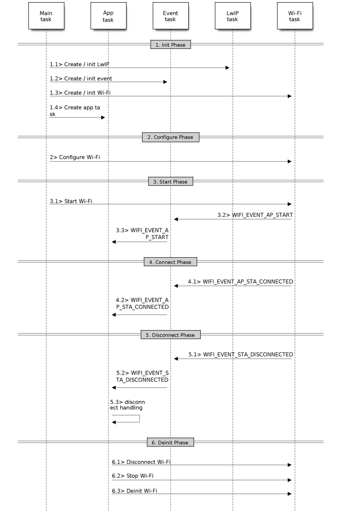

Wi-Fi მძღოლი¶
ESP32 Wi-Fi მახასიათებლების სია¶
- მხოლოდ სადგურის რეჟიმის, მხოლოდ AP რეჟიმის, სადგურის/AP თანაარსებობის რეჟიმის მხარდაჭერა
- პროტოკოლის რეჟიმის კონფიგურაციისთვის IEEE-802.11B, IEEE-802.11G, IEEE802.11N და API ის მხარდაჭერა
- WPA/WPA2/WPA2-Enterprise და WPS-ის მხარდაჭერა
- მხარდაჭერა AMPDU, HT40, QoS და სხვა ძირითადი ფუნქციები
- მოდემის ძილის რეჟიმის მხარდაჭერა
- Espressif-ის სპეციფიკური პროტოკოლის მხარდაჭერა, რომელიც, თავის მხრივ, მხარს უჭერს მაქსიმუმ 1 კმ მონაცემთა ტრაფიკის
- 20 მბ/წმ-მდე TCP გამტარუნარიანობა და 30 მბ/წმ-მდე UDP გამტარუნარიანობა ეთერში
- მხარდაჭერის სნაიფერი
- მხარდაჭერა fast_crypto ალგორითმისა და ნორმალური ალგორითმის გადამრთველის დასაყენებლად, რომელიც გამოიყენება wifi კავშირში
- მხარს უჭერს როგორც სწრაფი სკანირების, ასევე ყველა არხის სკანირების ფუნქციას
- მრავალი ანტენის მხარდაჭერა
- მხარდაჭერის არხის მდგომარეობის ინფორმაცია
როგორ დავწეროთ Wi-Fi განაცხადი¶
მომზადება¶
ზოგადად, საკუთარი Wi-Fi აპლიკაციის დასაწყებად ყველაზე ეფექტური გზაა აირჩიოთ თქვენი აპლიკაციის მსგავსი მაგალითი და გამოიყენოთ სასარგებლო ნაწილი თქვენს პროექტში. ეს აუცილებელი არ არის, მაგრამ მკაცრად რეკომენდებულია, რომ ჯერ ამ სტატიის წაკითხვას დაუთმოთ გარკვეული დრო, განსაკუთრებით თუ გსურთ საიმედო Wi-Fi აპლიკაციის დაპროგრამება. ეს სტატია Wi-Fi API მაგალითების დამატებაა. იგი აღწერს Wi-Fi API მაგალითების გამოყენების პრინციპებს, მიმდინარე Wi-Fi API იმპლემენტაციის შეზღუდვებს და Wi-Fi გამოყენების ყველაზე გავრცელებულ ხაფანგებს. ეს სტატია ასევე ავლენს Wi-Fi დრაივერის დიზაინის ზოგიერთ დეტალს. გირჩევთ, გაეცნოთ სულ მცირე შემდეგ ნაწილებს:ESP32 Wi-Fi API შეცდომის კოდი>,ESP32 Wi-Fi პროგრამირების მოდელი>, დაESP32 Wi-Fi მოვლენის აღწერა>
Wi-Fi კომპილაციის დროის პარამეტრების დაყენება¶
იხილეთWi-Fi მენიუს კონფიგურაცია>
ინიციალიზაცია Wi-Fi¶
იხილეთESP32 Wi-Fi სადგურის ზოგადი სცენარი>,ESP32 Wi-Fi AP ზოგადი სცენარი>
დაწყება/დაკავშირება Wi-Fi¶
იხილეთESP32 Wi-Fi სადგურის ზოგადი სცენარი>,ESP32 Wi-Fi AP ზოგადი სცენარი>
მოვლენების დამუშავება¶
ზოგადად, კოდის დაწერა ადვილია „მზიანი“ სცენარების დროს, მაგალითადWIFI_EVENT_STA_START>,WIFI_EVENT_STA_CONNECTED> და ა.შ. რთული ნაწილია რუტინების დაწერა „წვიმიან“ სცენარებში, მაგალითადWIFI_EVENT_STA_DISCONNECTED> და ა.შ. „წვიმიანი დღის“ სცენარების კარგად მართვა ფუნდამენტურია Wi-Fi საიმედო აპლიკაციებისთვის. იხილეთESP32 Wi-Fi მოვლენის აღწერა>,ESP32 Wi-Fi სადგურის ზოგადი სცენარი>,ESP32 Wi-Fi AP ზოგადი სცენარი>. იხილეთ აგრეთვე მოვლენების დამუშავების მიმოხილვა ESP-IDF ში.
შეცდომების აღდგენის რუტინების სწორად ჩაწერა ნებისმიერ დროს¶
ისევე, როგორც „წვიმიანი დღის“ სცენარების მართვისას, შეცდომების აღდგენის კარგი რუტინა ასევე ფუნდამენტურია Wi-Fi საიმედო აპლიკაციებისთვის. იხილეთESP32 Wi-Fi API შეცდომის კოდი>
ESP32 Wi-Fi API შეცდომის კოდი¶
- All of the ESP32 Wi-Fi APIs have well-defined return values, namely, the error code. The error code can be categorized into:
- შეცდომები არ არის, მაგ. ESP_OK ნიშნავს, რომ API წარმატებით აბრუნებს
- გამოსწორებადი შეცდომები, როგორიცაა ESP_ERR_NO_MEM და ა.შ.
- გამოუსწორებელი, არაკრიტიკული შეცდომები
- გამოუსწორებელი, კრიტიკული შეცდომები
შეცდომის კრიტიკული ხასიათს ატარებს თუ არა, ეს დამოკიდებულია API და აპლიკაციის სცენარზე და მას განსაზღვრავს API მომხმარებელი.
Wi-Fi ით API ით ძლიერი აპლიკაციის დაწერის მთავარი პრინციპია შეცდომის კოდის ყოველთვის შემოწმება და შეცდომების დამუშავების კოდის დაწერა. ზოგადად, შეცდომების დამუშავების კოდის გამოყენება შესაძლებელია:
- აღდგენილი შეცდომებისთვის, ამ შემთხვევაში შეგიძლიათ დაწეროთ აღდგენილი შეცდომის კოდი. მაგალითად, როდესაც esp_wifi_start აბრუნებს ESP_ERR_NO_MEM-ს, შესაძლებელია გამოძახებული შეცდომის კოდი vTaskDelay-ის გამოძახება, რათა კიდევ ერთი ცდისთვის მიკროწამიანი დაყოვნება მივიღოთ.
- შეუქცევადი, მაგრამ არაკრიტიკული შეცდომებისთვის, ამ შემთხვევაში შეცდომის კოდის დაბეჭდვა შეცდომების დამუშავების კარგი მეთოდია.
- შეუქცევადი, კრიტიკული შეცდომებისთვის, ამ შემთხვევაში „assert“ შეიძლება იყოს შეცდომების დამუშავების კარგი მეთოდი. მაგალითად, თუ esp_wifi_set_mode აბრუნებს ESP_ERR_WIFI_NOT_INIT-ს, ეს ნიშნავს, რომ Wi-Fi დრაივერი წარმატებით არ არის ინიციალიზებული esp_wifi_init-ის მიერ. ამ ტიპის შეცდომის აღმოჩენა ძალიან სწრაფად შეგიძლიათ აპლიკაციის შემუშავების ფაზაში.
esp_err.h ფაილში ESP_ERROR_CHECK ამოწმებს დაბრუნებულ მნიშვნელობებს. ეს საკმაოდ გავრცელებული შეცდომების დამუშავების კოდია და შეიძლება გამოყენებულ იქნას, როგორც შეცდომების დამუშავების ნაგულისხმევი კოდი აპლიკაციის შემუშავების ფაზაში. თუმცა, ჩვენ გირჩევთ, რომ API მომხმარებლებმა დაწერონ საკუთარი შეცდომების დამუშავების კოდი.
ESP32 Wi-Fi API პარამეტრის ინიციალიზაცია¶
API ისთვის struct პარამეტრების ინიციალიზაციისას უნდა გამოიყენოთ ორი მიდგომიდან ერთ-ერთი: - პარამეტრის ყველა ველის ცალსახად დაყენება ან - მიმდინარე კონფიგურაციის მისაღებად გამოიყენეთ get API , შემდეგ კი აპლიკაციისთვის სპეციფიკური ველების დაყენება.
ინიციალიზაცია ან მთელი სტრუქტურის მიღება ძალიან მნიშვნელოვანია, რადგან უმეტეს შემთხვევაში, მნიშვნელობა 0 მიუთითებს ნაგულისხმევ მნიშვნელობაზე. მომავალში სტრუქტურას შეიძლება დაემატოს მეტი ველი და მათი ნულზე ინიციალიზაცია უზრუნველყოფს, რომ აპლიკაცია კვლავ სწორად იმუშავებს IDF-ის ახალ ვერსიაზე განახლების შემდეგ.
ESP32 Wi-Fi პროგრამირების მოდელი¶
ESP32 Wi-Fi პროგრამირების მოდელი შემდეგნაირად არის გამოსახული:
Wi-Fi პროგრამირების მოდელი¶
Wi-Fi დრაივერი შეიძლება ჩაითვალოს შავ ყუთად, რომელმაც არაფერი იცის მაღალი დონის კოდის შესახებ, როგორიცაა TCP/IP სტეკი, აპლიკაციის დავალება, მოვლენის დავალება და ა.შ. აპლიკაციის დავალება (კოდი) ზოგადად იძახებს Wi-Fi მძღოლი API წმ Wi-Fi ინიციალიზაციისთვის და საჭიროების შემთხვევაში Wi-Fi მოვლენების დასამუშავებლად. Wi-Fi დრაივერი იღებს API ზარებს, ამუშავებს მათ და აქვეყნებს მოვლენებს აპლიკაციაში.
Wi-Fi მოვლენების დამუშავება ეფუძნება esp_event ბიბლიოთეკამოვლენები იგზავნება Wi-Fi დრაივერის მიერ ნაგულისხმევი მოვლენების ციკლიაპლიკაციას შეუძლია ამ მოვლენების დამუშავება უკუკავშირის გამოყენებით რეგისტრირებულ შემთხვევებში. esp_event_handler_register(). Wi-Fi ღონისძიებებს ასევე ამუშავებს esp_netif კომპონენტი ნაგულისხმევი ქცევების ნაკრების უზრუნველსაყოფად. მაგალითად, როდესაც Wi-Fi სადგური წვდომის წერტილს უკავშირდება, esp_netif ავტომატურად გაუშვებს DHCP კლიენტს (ნაგულისხმევად).
ESP32 Wi-Fi მოვლენის აღწერა¶
WIFI_EVENT_WIFI_READY¶
Wi-Fi დრაივერი არასდროს წარმოქმნის ამ მოვლენას, რის შედეგადაც, აპლიკაციის მოვლენის უკუგამოძახებისას მისი იგნორირება შესაძლებელია. ეს მოვლენა შესაძლოა მომავალ ვერსიებში წაიშალოს.
WIFI_EVENT_SCAN_DONE¶
სკანირების დასრულების მოვლენა გააქტიურებულია esp_wifi_scan_start() ფუნქციით და წარმოიქმნება შემდეგ სცენარებში:
- სკანირება დასრულებულია, მაგალითად, სამიზნე წვდომის წერტილი წარმატებით მოიძებნა ან ყველა არხი დასკანირებულია.
- სკანირება შეჩერებულია esp_wifi_scan_stop() ბრძანებით.
- esp_wifi_scan_start() გამოიძახება სკანირების დასრულებამდე. ახალი სკანირება გადაფარავს მიმდინარე სკანირებას და გენერირდება სკანირების დასრულების მოვლენა.
სკანირების დასრულების მოვლენა არ წარმოიქმნება შემდეგ სცენარებში:
- ეს დაბლოკილი სკანირებაა.
- სკანირება გამოწვეულია esp_wifi_connect()-ით.
ამ მოვლენის მიღების შემდეგ, მოვლენის დავალება არაფერს აკეთებს. აპლიკაციის მოვლენის უკუგამოძახებისას საჭიროა esp_wifi_scan_get_ap_num() და esp_wifi_scan_get_ap_records()-ის გამოძახება სკანირებული წვდომის წერტილების სიის მისაღებად და Wi-Fi დრაივერის გააქტიურებისთვის, რათა გათავისუფლდეს შიდა მეხსიერება, რომელიც გამოყოფილია სკანირების დროს. (ამის გაკეთება არ დაგავიწყდეთ)! უფრო დეტალური აღწერილობისთვის იხილეთ „ESP32 Wi-Fi სკანირება“.
WIFI_EVENT_STA_START¶
თუ esp_wifi_start() დააბრუნებს ESP_OK-ს და მიმდინარე Wi-Fi რეჟიმი არის Station ან AP+Station, მაშინ ეს მოვლენა წარმოიქმნება. ამ მოვლენის მიღებისთანავე, მოვლენის დავალება ინიციალიზაციას გაუკეთებს LwIP ქსელის ინტერფეისს (netif). როგორც წესი, აპლიკაციის მოვლენის უკუგამოძახებისას საჭიროა esp_wifi_connect()-ის გამოძახება კონფიგურირებულ AP-თან დასაკავშირებლად.
WIFI_EVENT_STA_STOP¶
თუ esp_wifi_stop() დააბრუნებს ESP_OK-ს და მიმდინარე Wi-Fi რეჟიმი არის Station ან AP+Station, მაშინ ეს მოვლენა წარმოიქმნება. ამ მოვლენის მიღებისთანავე, მოვლენის დავალება გაათავისუფლებს სადგურის IP მისამართს, შეაჩერებს DHCP კლიენტს, წაშლის TCP/UDP-თან დაკავშირებულ კავშირებს და გაასუფთავებს LwIP სადგურის ქსელს და ა.შ. აპლიკაციის მოვლენის უკუგამოძახებას, როგორც წესი, არაფრის გაკეთება არ სჭირდება.
WIFI_EVENT_STA_CONNECTED¶
თუ esp_wifi_connect() დააბრუნებს ESP_OK-ს და სადგური წარმატებით დაუკავშირდება სამიზნე წვდომის წერტილს, წარმოიქმნება კავშირის მოვლენა. ამ მოვლენის მიღებისთანავე, მოვლენის დავალება იწყებს DHCP კლიენტს და იწყებს IP მისამართის მიღების DHCP პროცესს. შემდეგ, Wi-Fi დრაივერი მზადაა მონაცემების გაგზავნისა და მიღებისთვის. ეს მომენტი კარგია აპლიკაციის მუშაობის დასაწყებად, იმ პირობით, რომ აპლიკაცია არ არის დამოკიდებული LwIP-ზე, კერძოდ IP მისამართზე. თუმცა, თუ აპლიკაცია LwIP-ზეა დაფუძნებული, მაშინ უნდა დაელოდოთ სანამ მივიღე IP ღონისძიება შემოდის.
WIFI_EVENT_STA_DISCONNECTED¶
ეს მოვლენა შეიძლება წარმოიშვას შემდეგ სცენარებში:
- როდესაც გამოიძახება esp_wifi_disconnect(), ან esp_wifi_stop(), ან esp_wifi_deinit(), ან esp_wifi_restart() და სადგური უკვე დაკავშირებულია წვდომის წერტილთან.
- როდესაც გამოიძახება esp_wifi_connect(), მაგრამ Wi-Fi დრაივერი ვერ ახერხებს წვდომის წერტილთან კავშირის დამყარებას გარკვეული მიზეზების გამო, მაგ. სკანირება ვერ ახერხებს სამიზნე წვდომის წერტილის პოვნას, ავტორიზაციის დროის ამოწურვა და ა.შ. თუ ერთზე მეტი წვდომის წერტილი ერთი და იგივე SSID-ით არის, გათიშვის მოვლენა ამოქმედდება მას შემდეგ, რაც სადგური ვერ ახერხებს ყველა ნაპოვნი წვდომის წერტილის დაკავშირებას.
- როდესაც Wi-Fi კავშირი წყდება კონკრეტული მიზეზების გამო, მაგალითად, სადგური განუწყვეტლივ კარგავს N შუქურას, წვდომის წერტილი რთავს სადგურს, იცვლება წვდომის წერტილის ავტორიზაციის რეჟიმი და ა.შ.
ამ მოვლენის მიღების შემდეგ, მოვლენის დავალების ნაგულისხმევი ქცევაა: - სადგურის LwIP ქსელის გამორთვა. - LwIP დავალებას აცნობებს UDP/TCP კავშირების გასუფთავების შესახებ, რომლებიც ყველა სოკეტისთვის არასწორ სტატუსს იწვევს. სოკეტზე დაფუძნებული აპლიკაციებისთვის, აპლიკაციის უკუკავშირს შეუძლია აირჩიოს ყველა სოკეტის დახურვა და საჭიროების შემთხვევაში მათი ხელახლა შექმნა ამ მოვლენის მიღებისთანავე.
აპლიკაციაში ამ მოვლენისთვის ყველაზე გავრცელებული მოვლენის დამუშავების კოდია esp_wifi_connect()-ის გამოძახება Wi-Fi ის ხელახლა დასაკავშირებლად. თუმცა, თუ მოვლენა წარმოიქმნება esp_wifi_disconnect()-ის გამოძახების გამო, აპლიკაციამ არ უნდა გამოიძახოს esp_wifi_connect() ხელახლა დასაკავშირებლად. აპლიკაციის პასუხისმგებლობაა გაარკვიოს, გამოწვეულია თუ არა მოვლენა esp_wifi_disconnect()-ით თუ სხვა მიზეზით. ზოგჯერ საჭიროა უკეთესი ხელახლა დაკავშირების სტრატეგია, იხილეთWi-Fi ხელახლა დაკავშირება> დასკანირება, როდესაც Wi-Fi უკავშირდება>
კიდევ ერთი რამ, რაც ჩვენს ყურადღებას იმსახურებს, არის ის, რომ LwIP-ის ნაგულისხმევი ქცევაა ყველა TCP სოკეტის კავშირის შეწყვეტა გათიშვის მიღებისთანავე. უმეტეს შემთხვევაში ეს პრობლემას არ წარმოადგენს. თუმცა, ზოგიერთი სპეციალური აპლიკაციისთვის, ეს შეიძლება არ იყოს ის, რაც მათ სურთ, გაითვალისწინეთ შემდეგი სცენარები:
- აპლიკაცია ქმნის TCP კავშირს, რათა შეინარჩუნოს აპლიკაციის დონეზე ყოველ 60 წამში გაგზავნილი მონაცემები.
- გარკვეული მიზეზების გამო, Wi-Fi კავშირი გაითიშა დაWIFI_EVENT_STA_DISCONNECTED> იხსნება. მიმდინარე იმპლემენტაციის მიხედვით, ყველა TCP კავშირი წაიშლება და keep-alive სოკეტი არასწორ მდგომარეობაში იქნება. თუმცა, რადგან აპლიკაციის დიზაინერი თვლის, რომ ქსელის დონეს არ უნდა ადარდებდეს ეს შეცდომა Wi-Fi დონეზე, აპლიკაცია არ ხურავს სოკეტს.
- ხუთი წამის შემდეგ, Wi-Fi კავშირი აღდგება, რადგან აპლიკაციის მოვლენის უკუკავშირის ფუნქციაში გამოიძახეს esp_wifi_connect(). უფრო მეტიც, სადგური უკავშირდება იმავე წვდომის წერტილს და იღებს იგივე IPV4 მისამართს, როგორც ადრე..
- სამოცი წამის შემდეგ, როდესაც აპლიკაცია აგზავნის მონაცემებს keep-alive სოკეტით, სოკეტი აბრუნებს შეცდომას და აპლიკაცია ხურავს სოკეტს და საჭიროების შემთხვევაში ხელახლა ქმნის მას.
ზემოთ მოცემულ სცენარში, იდეალურ შემთხვევაში, აპლიკაციის სოკეტებსა და ქსელის ფენაზე გავლენა არ უნდა მოხდეს, რადგან Wi-Fi კავშირი მხოლოდ დროებით წყდება და ძალიან სწრაფად აღდგება. აპლიკაციას შეუძლია ჩართოს „TCP კავშირების შენარჩუნება IP მისამართის შეცვლისას“ LwIP menuconfig მეშვეობით.
WIFI_EVENT_STA_AUTHMODE_CHANGE¶
ეს მოვლენა მაშინ ხდება, როდესაც წვდომის წერტილი, რომელთანაც სადგურია დაკავშირებული, იცვლის ავტორიზაციის რეჟიმს, მაგალითად, ავტორიზაციის არარსებობიდან WPA-ზე. ამ მოვლენის მიღების შემდეგ, მოვლენის დავალება არაფერს გააკეთებს. როგორც წესი, აპლიკაციის მოვლენის უკუგამოძახებას ამის დამუშავება არ სჭირდება.
IP_EVENT_STA_GOT_IP¶
ეს მოვლენა წარმოიქმნება მაშინ, როდესაც DHCP კლიენტი წარმატებით იღებს IPV4 მისამართს DHCP სერვერიდან, ან როდესაც IPV4 მისამართი იცვლება. მოვლენა ნიშნავს, რომ ყველაფერი მზადაა და აპლიკაციას შეუძლია დაიწყოს თავისი დავალებები (მაგ., სოკეტების შექმნა).
IPV4 შეიძლება შეიცვალოს შემდეგი მიზეზების გამო:
- DHCP კლიენტი ვერ ახერხებს IPV4 მისამართის განახლებას/ხელახლა დაკავშირებას და სადგურის IPV4 0-ზე გადადის.
- DHCP კლიენტი ხელახლა უკავშირდება სხვა მისამართს.
- სტატიკური კონფიგურირებული IPV4 მისამართი შეიცვალა.
IPv4 მისამართის ცვლილება თუ არა მითითებულია ველით. ip_change -ის ip_event_got_ip_t.
სოკეტი დაფუძნებულია IPV4 მისამართზე, რაც ნიშნავს, რომ თუ IPV4 შეიცვლება, ამ IPV4-თან დაკავშირებული ყველა სოკეტი არანორმალური გახდება. ამ მოვლენის მიღების შემდეგ, აპლიკაციამ უნდა დახუროს ყველა სოკეტი და ხელახლა შექმნას აპლიკაცია, როდესაც IPV4 შეიცვლება ვალიდურ მისამართად.
IP_EVENT_GOT_IP6¶
ეს მოვლენა წარმოიქმნება მაშინ, როდესაც IPV6 SLAAC მხარდაჭერა ავტომატურად ახდენს ESP32-ისთვის მისამართის კონფიგურაციას, ან როდესაც ეს მისამართი იცვლება. ეს მოვლენა ნიშნავს, რომ ყველაფერი მზადაა და აპლიკაციას შეუძლია თავისი ამოცანების (მაგ., სოკეტების შექმნა) დაწყება.
IP_STA_LOST_IP¶
ეს მოვლენა მაშინ ხდება, როდესაც IPV4 მისამართი არასწორი ხდება.
IP_STA_LOST_IP არ წარმოიქმნება WiFi-ის გათიშვისთანავე, სამაგიეროდ, ის იწყებს IPV4 მისამართის დაკარგვის ტაიმერს. თუ IPV4 მისამართი მიღებულია IP დაკარგული ტაიმერის ვადის გასვლამდე, IP_EVENT_STA_LOST_IP არ ხდება. წინააღმდეგ შემთხვევაში, მოვლენა წარმოიქმნება IPV4 მისამართის დაკარგვის ტაიმერის ვადის გასვლის შემდეგ.
როგორც წესი, აპლიკაციას ეს მოვლენა არ უნდა ადარდებდეს, ეს უბრალოდ გამართვა მოვლენაა, რომელიც აპლიკაციას აცნობებს IPV4 მისამართის დაკარგვის შესახებ.
WIFI_EVENT_AP_START¶
მსგავსიWIFI_EVENT_STA_START>
WIFI_EVENT_AP_STOP¶
მსგავსიWIFI_EVENT_STA_STOP>
WIFI_EVENT_AP_STACONNECTED¶
ყოველ ჯერზე, როდესაც სადგური უკავშირდება ESP32 AP-ს,WIFI_EVENT_AP_STACONNECTED> წარმოიქმნება. ამ მოვლენის მიღების შემდეგ, მოვლენის დავალება არაფერს გააკეთებს და აპლიკაციის უკუკავშირსაც შეუძლია მისი იგნორირება. თუმცა, შეიძლება დაგჭირდეთ რაიმეს გაკეთება, მაგალითად, დაკავშირებული STA-ს ინფორმაციის მიღება და ა.შ.
WIFI_EVENT_AP_STADISCONNECTED¶
ეს მოვლენა შეიძლება მოხდეს შემდეგ სცენარებში:
- აპლიკაცია გამოიძახებს esp_wifi_disconnect()-ს ან esp_wifi_deauth_sta()-ს სადგურის ხელით გათიშვისთვის.
- Wi-Fi დრაივერი რთავს სადგურს, მაგალითად, იმიტომ, რომ წვდომის წერტილს ბოლო ხუთი წუთის განმავლობაში არ მიუღია არცერთი პაკეტი და ა.შ.
- სადგური AP-ს იწყებს.
როდესაც ეს მოვლენა მოხდება, მოვლენის დავალება არაფერს გააკეთებს, მაგრამ აპლიკაციის მოვლენის უკუგამოძახებამ რაღაც უნდა გააკეთოს, მაგალითად, დახუროს ამ სადგურთან დაკავშირებული სოკეტი და ა.შ.
WIFI_EVENT_AP_PROBEREQRECVED¶
ეს მოვლენა ნაგულისხმევად გამორთულია. აპლიკაციას მისი ჩართვა API esp_wifi_set_event_mask()-ის მეშვეობით შეუძლია. როდესაც ეს მოვლენა ჩართულია, ის გააქტიურდება ყოველ ჯერზე, როდესაც წვდომის წერტილი მიიღებს ზონდის მოთხოვნას.
ESP32 Wi-Fi სადგურის ზოგადი სცენარი¶
ქვემოთ მოცემულია „დიდი სცენარი“, რომელიც აღწერს სადგურის რეჟიმში არსებულ რამდენიმე მცირე სცენარს:
ნიმუში Wi-Fi მოვლენის სცენარები სადგურის რეჟიმში¶
1. Wi-Fi /LwIP-ის საწყისი ფაზა¶
- s1.1: main task გამოიძახებს esp_netif_init() ფუნქციას LwIP ძირითადი დავალების შესაქმნელად და LwIP-თან დაკავშირებული სამუშაოს ინიციალიზაციისთვის.
- s1.2: main task გამოიძახებს esp_event_loop_init() ფუნქციას სისტემის მოვლენის ამოცანის შესაქმნელად და აპლიკაციის მოვლენის უკუკავშირის ფუნქციის ინიციალიზაციისთვის. ზემოთ მოცემულ სცენარში, აპლიკაციის მოვლენის უკუკავშირის ფუნქცია არაფერს აკეთებს გარდა იმისა, რომ მოვლენას აპლიკაციის ამოცანისთვის გადასცემს.
- s1.3: მთავარი დავალება გამოიძახებს esp_netif_create_default_wifi_ap() ან esp_netif_create_default_wifi_sta() ფუნქციას, რათა შექმნას ქსელის ინტერფეისის ნაგულისხმევი ეგზემპლარი-დაკავშირების სადგური ან წვდომის წერტილი TCP/IP დასტით.
- s1.4: main task გამოიძახებს esp_wifi_init() ფუნქციას Wi-Fi დრაივერის ამოცანის შესაქმნელად და Wi-Fi დრაივერის ინიციალიზაციისთვის.
- s1.5: main task გამოიძახებს OS API აპლიკაციის ამოცანის შესაქმნელად.
ნაბიჯი 1.1~1.5 არის რეკომენდებული თანმიმდევრობა, რომელიც ინიციალიზაციას უკეთებს Wi-Fi -/LwIP-ზე დაფუძნებულ აპლიკაციას. თუმცა, ეს არის არა აუცილებლად შესასრულებელი თანმიმდევრობა, რაც ნიშნავს, რომ შეგიძლიათ შექმნათ აპლიკაციის დავალება 1.1 ნაბიჯში და ყველა სხვა ინიციალიზაცია მოათავსოთ აპლიკაციის დავალებაში. გარდა ამისა, შეიძლება არ გსურდეთ აპლიკაციის დავალების შექმნა ინიციალიზაციის ფაზაში, თუ აპლიკაციის დავალება დამოკიდებულია სოკეტებზე. ამის ნაცვლად, შეგიძლიათ გადადოთ დავალების შექმნა IP მისამართის მიღებამდე.
2. Wi-Fi კონფიგურაციის ფაზა¶
Wi-Fi დრაივერის ინიციალიზაციის შემდეგ, შეგიძლიათ დაიწყოთ Wi-Fi დრაივერის კონფიგურაცია. ამ სცენარში რეჟიმი არის Station, ამიტომ შეიძლება დაგჭირდეთ esp_wifi_set_mode(WIFI_MODE_STA)-ს გამოძახება, რათა Wi-Fi რეჟიმი Station-ად დააკონფიგურიროთ. შეგიძლიათ გამოიძახოთ სხვა esp_wifi_set_xxx API ები დამატებითი პარამეტრების კონფიგურაციისთვის, როგორიცაა პროტოკოლის რეჟიმი, ქვეყნის კოდი, გამტარუნარიანობა და ა.შ. იხილეთESP32 Wi-Fi კონფიგურაცია>
როგორც წესი, Wi-Fi დრაივერის კონფიგურაციას Wi-Fi კავშირის დაყენებამდე ვახდენთ, მაგრამ ეს არა სავალდებულოა, რაც ნიშნავს, რომ თქვენ შეგიძლიათ Wi-Fi კავშირის კონფიგურაცია ნებისმიერ დროს, იმ პირობით, რომ Wi-Fi დრაივერი წარმატებით ინიციალიზებულია. თუმცა, თუ კონფიგურაციის შეცვლა არ არის საჭირო Wi-Fi კავშირის დაყენების შემდეგ, თქვენ უნდა დააკონფიგურიროთ Wi-Fi დრაივერი ამ ეტაპზე, რადგან API კონფიგურაცია (მაგალითად, esp_wifi_set_protocol) გამოიწვევს Wi-Fi ხელახლა დაკავშირებას, რაც შეიძლება არასასურველი იყოს.
თუ Wi-Fi NVS ფლეშ მეხსიერება ჩართულია menuconfig მიერ, ამ ფაზაში ან შემდგომ ფაზებში Wi-Fi ყველა კონფიგურაცია შეინახება ფლეშ მეხსიერება ში. დაფის ჩართვის/გადატვირთვისას, თქვენ არ გჭირდებათ Wi-Fi დრაივერის ნულიდან კონფიგურაცია. თქვენ მხოლოდ esp_wifi_get_xxx API s-ის გამოძახება გჭირდებათ ფლეშ მეხსიერება ში ადრე შენახული კონფიგურაციის მისაღებად. ასევე შეგიძლიათ Wi-Fi დრაივერის კონფიგურაცია, თუ წინა კონფიგურაცია არ არის თქვენთვის სასურველი.
3. Wi-Fi დაწყების ფაზა¶
- s3.1: Wi-Fi დრაივერის გასაშვებად გამოიძახეთ esp_wifi_start.
- s3.2: Wi-Fi მძღოლის პოსტებიWIFI_EVENT_STA_START> მოვლენის დავალებისთვის; შემდეგ, მოვლენის დავალება შეასრულებს რამდენიმე ჩვეულებრივ ფუნქციას და გამოიძახებს აპლიკაციის მოვლენის უკუგამოძახების ფუნქციას.
- s3.3: აპლიკაციის მოვლენის უკუკავშირის ფუნქცია გადასცემსWIFI_EVENT_STA_START> აპლიკაციის დავალებაზე. გირჩევთ, გამოიძახოთ esp_wifi_connect(). თუმცა, ასევე შეგიძლიათ გამოიძახოთ esp_wifi_connect() სხვა ფრაზებშიც, შემდეგWIFI_EVENT_STA_START> წარმოიქმნება.
4. Wi-Fi კავშირის ფაზა¶
- s4.1: esp_wifi_connect() ფუნქციის გამოძახების შემდეგ, Wi-Fi დრაივერი დაიწყებს შიდა სკანირების/დაკავშირების პროცესს.
- s4.2: თუ შიდა სკანირების/დაკავშირების პროცესი წარმატებულია,WIFI_EVENT_STA_CONNECTED> გენერირდება. მოვლენის დავალებაში ის იწყებს DHCP კლიენტს, რომელიც საბოლოოდ ააქტიურებს DHCP პროცესს.
- s4.3: ზემოთ ხსენებულ სცენარში, აპლიკაციის მოვლენის უკუკავშირი მოვლენას აპლიკაციის დავალებას გადასცემს. როგორც წესი, აპლიკაციას არაფრის გაკეთება არ სჭირდება და თქვენ შეგიძლიათ გააკეთოთ რაც გსურთ, მაგ., ჟურნალის დაბეჭდვა და ა.შ.
4.2 ნაბიჯში, Wi-Fi კავშირი შეიძლება ვერ შესრულდეს, მაგალითად, პაროლი არასწორია, წვდომის წერტილი ვერ მოიძებნა და ა.შ. ასეთ შემთხვევაში,WIFI_EVENT_STA_DISCONNECTED> წარმოიქმნება და ასეთი გაუმართაობის მიზეზი იქნება მითითებული. Wi-Fi კავშირის შემაფერხებელი მოვლენების მართვისთვის იხილეთ მე-6 ფაზა.
5. Wi-Fi -5 ტერმინალი „IP-ის მიღების“ ფაზა¶
- s5.1: მას შემდეგ, რაც DHCP კლიენტი ინიციალიზებული იქნება 4.2 ნაბიჯში, მივიღე IP ფაზა დაიწყება.
- s5.2: თუ IP მისამართი წარმატებით იქნა მიღებული DHCP სერვერიდან, მაშინIP_EVENT_STA_GOT_IP> წარმოიქმნება და მოვლენის დავალება შეასრულებს საერთო დამუშავებას.
- s5.3: აპლიკაციის მოვლენის უკუკავშირში,IP_EVENT_STA_GOT_IP> გადაეცემა აპლიკაციის დავალებას. LwIP-ზე დაფუძნებული აპლიკაციებისთვის ეს მოვლენა ძალიან განსაკუთრებულია და ნიშნავს, რომ ყველაფერი მზადაა აპლიკაციისთვის თავისი დავალებების დასაწყებად, მაგ. TCP/UDP სოკეტის შექმნა და ა.შ. ძალიან გავრცელებული შეცდომაა სოკეტის ინიციალიზაცია დაწყებამდე.IP_EVENT_STA_GOT_IP> მიღებულია. არ დაიწყოთ სოკეტთან დაკავშირებული სამუშაო IP მისამართის მიღებამდე.
6. Wi-Fi გათიშვის ფაზა¶
- s6.1: როდესაც Wi-Fi კავშირი გაწყდება, მაგალითად, წვდომის წერტილის გამორთვის, RSSI-ის ცუდი ხარისხის გამო და ა.შ.WIFI_EVENT_STA_DISCONNECTED> წარმოიქმნება. ეს მოვლენა შეიძლება ასევე წარმოიშვას მე-3 ფაზაში. აქ, მოვლენის დავალება აცნობებს LwIP დავალებას, გაასუფთაოს/წაშალოს ყველა UDP/TCP კავშირი. შემდეგ, ყველა აპლიკაციის სოკეტი არასწორ მდგომარეობაში იქნება. სხვა სიტყვებით რომ ვთქვათ, ამ მოვლენის დროს ვერცერთი სოკეტი ვერ იმუშავებს სწორად.
- s6.2: ზემოთ აღწერილ სცენარში, აპლიკაციის მოვლენის უკუკავშირის ფუნქცია გადასცემსWIFI_EVENT_STA_DISCONNECTED> აპლიკაციის დავალებაზე. ჩვენ გირჩევთ, რომ გამოიძახოთ esp_wifi_connect() Wi-Fi ხელახლა დასაკავშირებლად, ყველა სოკეტის დასახურად და საჭიროების შემთხვევაში მათი ხელახლა შესაქმნელად. იხილეთWIFI_EVENT_STA_DISCONNECTED>
7. Wi-Fi ინტელექტუალური საკუთრების შეცვლის ფაზა¶
- s7.1: თუ IP მისამართი შეიცვლება,IP_EVENT_STA_GOT_IP> წარმოიქმნება „ip_change“-ის true-ზე დაყენების შემთხვევაში.
- s7.2: ეს მოვლენა მნიშვნელოვანია აპლიკაციისთვის. როდესაც ის მოხდება, დრო შესაფერისია ყველა შექმნილი სოკეტის დასახურად და ხელახლა შესაქმნელად.
8. Wi-Fi დეინიტ ფაზა¶
- s8.1: Wi-Fi კავშირის გასაწყვეტად გამოიძახეთ esp_wifi_disconnect() ბრძანება.
- s8.2: Wi-Fi დრაივერის შესაჩერებლად გამოიძახეთ esp_wifi_stop() ბრძანება.
- s8.3: Wi-Fi დრაივერის გადმოსატვირთად გამოიძახეთ esp_wifi_deinit() ფუნქცია.
ESP32 Wi-Fi AP ზოგადი სცენარი¶
ქვემოთ მოცემულია „დიდი სცენარი“, რომელიც აღწერს AP რეჟიმში არსებულ რამდენიმე მცირე სცენარს:
ნიმუში Wi-Fi მოვლენის სცენარები AP რეჟიმში¶
ESP32 Wi-Fi სკანირება¶
ამჟამად, esp_wifi_scan_start() API მხარდაჭერილია მხოლოდ Station ან Station+AP რეჟიმში.
სკანირების ტიპი¶
| რეჟიმი | აღწერა |
|---|---|
| აქტიური სკანირება | სკანირება ზონდის მოთხოვნის გაგზავნით. ნაგულისხმევი სკანირება აქტიური სკანირებაა. |
| პასიური სკანირება | ზონდის მოთხოვნა არ იგზავნება. უბრალოდ გადართეთ კონკრეტულ არხზე და დაელოდეთ შუქურას. აპლიკაციას შეუძლია მისი ჩართვა wifi_scan_config_t-ის scan_type ველის მეშვეობით. |
| წინა პლანის სკანირება | ეს სკანირება გამოიყენება მაშინ, როდესაც სადგურის რეჟიმში Wi-Fi თან კავშირი არ არის. წინა ან ფონის სკანირებას Wi-Fi დრაივერი აკონტროლებს და მისი კონფიგურაცია აპლიკაციის მიერ შეუძლებელია. |
| ფონური სკანირება | ეს სკანირება გამოიყენება მაშინ, როდესაც Wi-Fi კავშირია სადგურის რეჟიმში ან სადგური+AP რეჟიმში. წინა პლანის თუ ფონური სკანირება დამოკიდებულია Wi-Fi დრაივერზე და მისი კონფიგურაცია შეუძლებელია აპლიკაციის მიერ. |
| ყველა არხის სკანირება | ის ყველა არხს სკანირებას უკეთებს. თუ wifi_scan_config_t-ის არხის ველი 0-ზეა დაყენებული, ეს ყველა არხის სკანირებაა. |
|
ის მხოლოდ კონკრეტულ არხებს სკანირებას უკეთებს. თუ wifi_scan_config_t-ის არხის ველი 1-ზეა დაყენებული, ეს კონკრეტული არხის სკანირებაა. |
- The scan modes in above table can be combined arbitrarily, so we totally have 8 different scans:
- ყველა არხის ფონური აქტიური სკანირება
- ყველა არხის ფონური პასიური სკანირება
- ყველა არხის წინა პლანის აქტიური სკანირება
- ყველა არხის წინა პლანის პასიური სკანირება
- კონკრეტული არხის ფონური აქტიური სკანირება
- კონკრეტული არხის ფონური პასიური სკანირება
- კონკრეტული არხის წინა პლანის აქტიური სკანირება
- სპეციფიკური არხის წინა პლანის პასიური სკანირება
სკანირების კონფიგურაცია¶
სკანირების ტიპი და სხვა სკანირების ატრიბუტები კონფიგურირებულია esp_wifi_scan_start-ის მიერ. ქვემოთ მოცემულ ცხრილში მოცემულია wifi_scan_config_t-ის დეტალური აღწერა.
| ველი | აღწერა |
|---|---|
| ssid | თუ SSID არ არის NULL, სკანირება შესაძლებელია მხოლოდ იმავე SSID-ის მქონე წვდომის წერტილის მქონე. |
| bssid | თუ BSSID არ არის NULL, სკანირება შესაძლებელია მხოლოდ იმავე BSSID-ის მქონე წვდომის წერტილის გამოყენებით. |
| არხი | თუ „არხი“ 0-ის ტოლია, ყველა არხის სკანირება მოხდება; წინააღმდეგ შემთხვევაში, კონკრეტული არხის სკანირება მოხდება. |
| დამალული_ჩვენება | თუ „show_hidden“ 0-ის ტოლია, სკანირება უგულებელყოფს დამალულ SSID-ის მქონე წვდომის წერტილს; წინააღმდეგ შემთხვევაში, სკანირება დამალულ წვდომის წერტილს ჩვეულებრივ წვდომის წერტილად მიიჩნევს. |
| სკანირების_ტიპი | თუ „scan_type“ არის WIFI_SCAN_TYPE_ACTIVE, სკანირება „აქტიურია“; სხვა შემთხვევაში, ის „პასიურია“. |
| სკანირების_დრო | ეს ველი გამოიყენება იმის გასაკონტროლებლად, თუ რამდენ ხანს გრძელდება სკანირება თითოეულ არხზე. პასიური სკანირებისთვის, scan_time.passive განსაზღვრავს თითოეული არხისთვის დაყოვნების დროს. აქტიური სკანირებისთვის, თითოეული არხისთვის შეყოვნების დრო მოცემულია ქვემოთ მოცემულ ცხრილში. აქ min არის scan time.active.min-ის შემოკლებული ფორმა, ხოლო max არის scan_time.active.max-ის შემოკლებული ფორმა.
თუ გსურთ სკანირების მუშაობის გაუმჯობესება, შეგიძლიათ სცადოთ ამ ორი პარამეტრის შეცვლა. |
ასევე არსებობს რამდენიმე გლობალური სკანირების ატრიბუტი, რომელიც კონფიგურირებულია API esp_wifi_set_config-ის მიერ, იხილეთ სადგურის ძირითადი კონფიგურაცია
ყველა არხზე არსებული ყველა წვდომის წერტილის სკანირება (წინა პლანზე)¶
სცენარი:
ყველა Wi-Fi არხის წინა პლანზე სკანირება¶
ზემოთ მოცემული სცენარი აღწერს ყველა არხის, წინა პლანის სკანირებას. წინა პლანის სკანირება შესაძლებელია მხოლოდ სადგურის რეჟიმში, სადაც სადგური არ უკავშირდება არცერთ წვდომის წერტილს. წინა პლანის თუ ფონური სკანირება მთლიანად განისაზღვრება Wi-Fi დრაივერით და მისი კონფიგურაცია შეუძლებელია აპლიკაციის მიერ.
სცენარის დეტალური აღწერა:
სკანირების კონფიგურაციის ფაზა¶
- s1.1: თუ ქვეყნის ნაგულისხმევი ინფორმაცია არ შეესაბამება სასურველს, გამოიძახეთ esp_wifi_set_country() ბრძანება ქვეყნის ინფორმაციის დასაყენებლად.Wi-Fi ქვეყნის კოდი>
- s1.2: სკანირების კონფიგურაციისთვის გამოიძახეთ esp_wifi_scan_start() ბრძანება. ამისათვის შეგიძლიათ იხილოთსკანირების კონფიგურაცია>. რადგან ეს ყველა არხის სკანირებაა, უბრალოდ დააყენეთ SSID/BSSID/არხი 0-ზე.
Wi-Fi მძღოლის შიდა სკანირების ფაზა¶
- s2.1: Wi-Fi დრაივერი გადადის 1 არხზე, იმ შემთხვევაში, თუ სკანირების ტიპია WIFI_SCAN_TYPE_ACTIVE, და აგზავნის ზონდის მოთხოვნას. წინააღმდეგ შემთხვევაში, Wi-Fi დაელოდება წვდომის წერტილებიდან შუქურას. Wi-Fi დრაივერი გარკვეული დროის განმავლობაში დარჩება 1 არხზე. დაყოვნების დრო კონფიგურირებულია მინ/მაქს დროში, ნაგულისხმევი მნიშვნელობით 120 ms.
- s2.2: Wi-Fi დრაივერი გადაერთვება მე-2 არხზე და ასრულებს იგივე ოპერაციას, რაც 2.1 ნაბიჯში.
- s2.3: Wi-Fi დრაივერი სკანირებს ბოლო არხს N, სადაც N განისაზღვრება ქვეყნის კოდით, რომელიც კონფიგურირებულია 1.1 ნაბიჯში.
სკანირების დასრულების მოვლენების დამუშავების ფაზა¶
- s3.1: როდესაც ყველა არხი სკანირებულია,WIFI_EVENT_SCAN_DONE> წარმოიქმნება.
- s3.2: აპლიკაციის მოვლენის უკუკავშირის ფუნქცია აცნობებს აპლიკაციის დავალებას, რომWIFI_EVENT_SCAN_DONE> მიღებულია. esp_wifi_scan_get_ap_num() გამოიძახება ამ სკანირებისას ნაპოვნი წვდომის წერტილების რაოდენობის მისაღებად. შემდეგ ის გამოყოფს საკმარის ჩანაწერებს და იძახებს esp_wifi_scan_get_ap_records()-ს წვდომის ჩანაწერების მისაღებად. გაითვალისწინეთ, რომ Wi-Fi დრაივერში წვდომის წერტილების ჩანაწერები გათავისუფლდება esp_wifi_scan_get_ap_records()-ის გამოძახების შემდეგ. ერთი სკანირების მოვლენისთვის არ გამოიძახოთ esp_wifi_scan_get_ap_records() ორჯერ. თუ სკანირების მოვლენის დროს esp_wifi_scan_get_ap_records() არ გამოიძახება, Wi-Fi დრაივერის მიერ გამოყოფილი წვდომის წერტილების ჩანაწერები არ გათავისუფლდება. ამიტომ, დარწმუნდით, რომ გამოიძახებთ esp_wifi_scan_get_ap_records(), მაგრამ მხოლოდ ერთხელ.
ყველა წვდომის წერტილის სკანირება ყველა არხზე (ფონური)¶
სცენარი:
ყველა Wi-Fi არხის ფონური სკანირება¶
ზემოთ მოცემული სცენარი წარმოადგენს ყველა არხის ფონურ სკანირებას. შედარებით ყველა არხზე არსებული ყველა წვდომის წერტილის სკანირება (წინა პლანზე) ყველა არხის ფონურ სკანირებას შორის განსხვავება ისაა, რომ Wi-Fi დრაივერი შემდეგ არხზე გადასვლამდე 30 მილიწამის განმავლობაში დაასკანირებს უკანა არხს, რათა Wi-Fi კავშირს მონაცემების გადაცემის/მიღების შანსი მისცეს.
ყველა არხში კონკრეტული წვდომის წერტილის სკანირება¶
სცენარი:
კონკრეტული Wi-Fi სკანირება 5 არხი¶
ეს სკანირება მსგავსია ყველა არხზე არსებული ყველა წვდომის წერტილის სკანირება (წინა პლანზე)განსხვავებებია:
- s1.1: 1.2 ნაბიჯში, სამიზნე წვდომის წერტილი კონფიგურირებული იქნება SSID/BSSID-ზე.
- s2.1~s2.N: ყოველ ჯერზე, როდესაც Wi-Fi დრაივერი სკანირებს წვდომის წერტილს, ის ამოწმებს, არის თუ არა ეს სამიზნე წვდომის წერტილი. თუ სკანირება არის WIFI_FAST_SCAN სკანირება და სამიზნე წვდომის წერტილი მოიძებნება, მაშინ წარმოიქმნება სკანირების დასრულების მოვლენა და სკანირება დასრულდება; წინააღმდეგ შემთხვევაში, სკანირება გაგრძელდება. გაითვალისწინეთ, რომ პირველი სკანირებული არხი შეიძლება არ იყოს პირველი არხი, რადგან Wi-Fi დრაივერი ოპტიმიზაციას უკეთებს სკანირების თანმიმდევრობას.
თუ სამიზნე AP-ის ინფორმაციას ემთხვევა რამდენიმე წვდომის წერტილი, მაგალითად, თუ შემთხვევით დავასკანირებთ ორ წვდომის წერტილს, რომელთა SSID არის „ap“. თუ სკანირება არის WIFI_FAST_SCAN, მაშინ მოიძებნება მხოლოდ პირველი სკანირებული „ap“, თუ სკანირება არის WIFI_ALL_CHANNEL_SCAN, მოიძებნება ორივე „ap“ და სადგური დააკავშირებს „ap“-ს კონფიგურირებული სტრატეგიის შესაბამისად, იხილეთ სადგურის ძირითადი კონფიგურაცია.
შეგიძლიათ კონკრეტული წვდომის წერტილის ან ყველა მათგანის სკანირება ნებისმიერ მოცემულ არხში. ეს ორი სცენარი ძალიან ჰგავს ერთმანეთს.
სკანირება Wi-Fi Connect-ში¶
როდესაც esp_wifi_connect() გამოიძახება, Wi-Fi დრაივერი ჯერ კონფიგურირებული წვდომის წერტილის სკანირებას შეეცდება. „ Wi-Fi Connect“-ში სკანირება იგივეა, რაც ყველა არხში კონკრეტული წვდომის წერტილის სკანირება, გარდა იმისა, რომ სკანირების დასრულებისას სკანირების დასრულების მოვლენა არ გენერირდება. თუ სამიზნე წვდომის წერტილი მოიძებნება, მაშინ Wi-Fi დრაივერი დაიწყებს Wi-Fi კავშირს; წინააღმდეგ შემთხვევაში,WIFI_EVENT_STA_DISCONNECTED> გენერირდება. იხილეთ ყველა არხში კონკრეტული წვდომის წერტილის სკანირება
სკანირება დაბლოკილ რეჟიმში¶
თუ esp_wifi_scan_start()-ის ბლოკის პარამეტრი true-ს ტოლია, მაშინ სკანირება დაბლოკილია და აპლიკაციის დავალება დაბლოკილი იქნება სკანირების დასრულებამდე. დაბლოკილი სკანირება განბლოკილის მსგავსია, გარდა იმისა, რომ დაბლოკილი სკანირების დასრულებისას სკანირების დასრულების მოვლენა არ წარმოიქმნება.
პარალელური სკანირება¶
ორი აპლიკაციის დავალებამ შეიძლება ერთდროულად გამოიძახოს esp_wifi_scan_start() ფუნქცია, ან ერთი და იგივე აპლიკაციის დავალებამ გამოიძახოს esp_wifi_scan_start() ფუნქცია სკანირების დასრულების მოვლენის მიღებამდე. ორივე სცენარი შეიძლება მოხდეს. თუმცა, Wi-Fi დრაივერი საკმარისად არ უჭერს მხარს მრავალჯერად ერთდროულ სკანირებას. შედეგად, ერთდროული სკანირება თავიდან უნდა იქნას აცილებული. ერთდროული სკანირების მხარდაჭერა გაუმჯობესდება მომავალ ვერსიებში, რადგან ESP32-ის Wi-Fi ფუნქციონირება მუდმივად გაუმჯობესდება.
სკანირება, როდესაც Wi-Fi უკავშირდება¶
esp_wifi_scan_start() ფუნქცია მაშინვე ვერ ხერხდება, თუ Wi-Fi დაკავშირების პროცესშია, რადგან დაკავშირებას სკანირებაზე მაღალი პრიორიტეტი აქვს. თუ დაკავშირების გამო სკანირება ვერ ხერხდება, რეკომენდებული სტრატეგიაა გარკვეული დროის გადადება და სკანირების ხელახლა ცდა. სკანირება წარმატებით დასრულდება დაკავშირების დასრულების შემდეგ.
თუმცა, ხელახალი ცდის/დაგვიანების სტრატეგია შეიძლება ყოველთვის არ იმუშაოს. შემდეგი სცენარის გათვალისწინებით: - სადგური არარსებულ წვდომის წერტილს უკავშირებს ან თუ სადგური არსებულ წვდომის წერტილს არასწორი პაროლით უკავშირებს, ის ყოველთვის იწვევს მოვლენას.WIFI_EVENT_STA_DISCONNECTED>. - გათიშვის მოვლენის მიღებისას აპლიკაცია გამოიძახებს esp_wifi_connect() ბრძანებას ხელახალი დაკავშირების განსახორციელებლად. - კიდევ ერთი აპლიკაციის დავალება, მაგ. კონსოლის დავალება, გამოიძახებს esp_wifi_scan_start() ბრძანებას სკანირების განსახორციელებლად, სკანირება ყოველთვის მაშინვე ვერ ხერხდება, რადგან სადგური აგრძელებს დაკავშირებას. - როდესაც სკანირება ვერ ხერხდება, აპლიკაცია უბრალოდ აჭიანურებს და ხელახლა ცდილობს სკანირებას.
ზემოთ მოცემულ სცენარში სკანირება ვერასდროს წარუმატებელი იქნება, რადგან დაკავშირება მიმდინარეობს. ამიტომ, თუ აპლიკაცია მხარს უჭერს მსგავს სცენარს, მას სჭირდება უკეთესი ხელახალი დაკავშირების სტრატეგიის დანერგვა. მაგ. - აპლიკაციას შეუძლია აირჩიოს მაქსიმალური უწყვეტი ხელახალი დაკავშირების მრიცხველის განსაზღვრა და ხელახალი დაკავშირების შეწყვეტა, როგორც კი ხელახალი დაკავშირების მაქსიმალურ მრიცხველს მიაღწევს. - აპლიკაციას შეუძლია აირჩიოს ხელახალი დაკავშირების დაუყოვნებლივ განხორციელება პირველი N უწყვეტი ხელახალი დაკავშირებისას, შემდეგ კი გარკვეული დროის შეყოვნება და ხელახლა დაკავშირება.
აპლიკაციას შეუძლია განსაზღვროს საკუთარი ხელახალი დაკავშირების სტრატეგია, რათა თავიდან აიცილოს სკანირების შიმშილი. იხილეთWi-Fi ხელახლა დაკავშირება>
ESP32 Wi-Fi სადგურის დაკავშირების სცენარი¶
ეს სცენარი მხოლოდ იმ შემთხვევას ასახავს, როდესაც სკანირების ფაზაში მხოლოდ ერთი სამიზნე წვდომის წერტილია ნაპოვნი, ხოლო იმ სცენარისთვის, როდესაც ერთი და იგივე SSID-ის მქონე ერთზე მეტი წვდომის წერტილია ნაპოვნი, იხილეთESP32 Wi-Fi სადგური უკავშირდება მრავალი წვდომის წერტილის პოვნისას>
როგორც წესი, აპლიკაციას არ სჭირდება დაკავშირების პროცესზე ზრუნვა. ქვემოთ მოცემულია პროცესის მოკლე შესავალი მათთვის, ვისაც ნამდვილად აინტერესებს.
სცენარი:
Wi-Fi სადგურის დაკავშირების პროცესი¶
სკანირების ფაზა¶
- s1.1, Wi-Fi დრაივერი იწყებს სკანირებას „ Wi-Fi Connect“-ში. იხილეთსკანირება Wi-Fi Connect-ში> დამატებითი დეტალებისთვის.
- s1.2, თუ სკანირება ვერ პოულობს სამიზნე წვდომის წერტილს,WIFI_EVENT_STA_DISCONNECTED> წარმოიქმნება და მიზეზის კოდი იქნება WIFI_REASON_NO_AP_FOUND. იხილეთWi-Fi მიზეზის კოდი>
ავტორიზაციის ფაზა¶
- s2.1, ავტორიზაციის მოთხოვნის პაკეტი გაიგზავნა და ავტორიზაციის ტაიმერი ჩართულია.
- s2.2, თუ ავტორიზაციის საპასუხო პაკეტი არ მიიღება ავტორიზაციის ტაიმერის ვადის ამოწურვამდე,WIFI_EVENT_STA_DISCONNECTED> წარმოიქმნება და მიზეზის კოდი იქნება WIFI_REASON_AUTH_EXPIRE. იხილეთWi-Fi მიზეზის კოდი>
- s2.3, ავტორიზაციის პასუხის პაკეტი მიღებულია და ავტორიზაციის ტაიმერი შეჩერებულია.
- s2.4, წვდომის წერტილი უარყოფს ავთენტიფიკაციას პასუხში დაWIFI_EVENT_STA_DISCONNECTED> წარმოიქმნება, მაშინ როდესაც მიზეზის კოდია WIFI_REASON_AUTH_FAIL ან AP-ის მიერ მითითებული მიზეზები. იხილეთWi-Fi მიზეზის კოდი>
ასოციაციის ფაზა¶
- s3.1, ასოციაციის მოთხოვნა გაიგზავნა და ასოციაციის ტაიმერი ჩართულია.
- s3.2, თუ ასოციაციის პასუხი არ მიიღება ასოციაციის ტაიმერის ვადის ამოწურვამდე,WIFI_EVENT_STA_DISCONNECTED> წარმოიქმნება და მიზეზის კოდი იქნება WIFI_REASON_ASSOC_EXPIRE. იხილეთWi-Fi მიზეზის კოდი>
- s3.3, ასოციაციის პასუხი მიღებულია და ასოციაციის ტაიმერი გაჩერებულია.
- s3.4, AP უარყოფს პასუხში ასოციაციას დაWIFI_EVENT_STA_DISCONNECTED> ჩნდება, ხოლო მიზეზის კოდი არის ასოციაციის პასუხში მითითებული. იხილეთWi-Fi მიზეზის კოდი>
ოთხმხრივი ხელის ჩამორთმევის ფაზა¶
- s4.1, ოთხმხრივი ხელის შეხება იგზავნება და ასოციაციის ტაიმერი ჩართულია.
- s4.2, თუ ასოციაციის პასუხი არ მიიღება ასოციაციის ტაიმერის ვადის ამოწურვამდე,WIFI_EVENT_STA_DISCONNECTED> წარმოიქმნება და მიზეზის კოდი იქნება WIFI_REASON_ASSOC_EXPIRE. იხილეთWi-Fi მიზეზის კოდი>
- s4.3, ასოციაციის პასუხი მიღებულია და ასოციაციის ტაიმერი გაჩერებულია.
- s4.4, AP უარყოფს პასუხში ასოციაციას დაWIFI_EVENT_STA_DISCONNECTED> წარმოიქმნება და მიზეზის კოდი იქნება ასოციაციის პასუხში მითითებული. იხილეთWi-Fi მიზეზის კოდი>
Wi-Fi მიზეზის კოდი¶
ქვემოთ მოცემულ ცხრილში ნაჩვენებია ESP32-ში განსაზღვრული მიზეზის კოდი. პირველი სვეტი არის esp_wifi_types.h-ში განსაზღვრული მაკროს სახელი. საერთო პრეფიქსი WIFI_REASON ამოღებულია, რაც ნიშნავს, რომ დაუზუსტებელი სინამდვილეში ნიშნავს WIFI_REASON_UNSPECIFICIED და ა.შ. მეორე სვეტი არის მიზეზის მნიშვნელობა. მესამე სვეტი არის სტანდარტული მნიშვნელობა, რომელზეც ეს მიზეზი მიმაგრებულია ieee802.11-2012-ის 8.4.1.7 ნაწილში. (დამატებითი ინფორმაციისთვის იხილეთ ზემოთ ნახსენები სტანდარტი.) ბოლო სვეტი არის მიზეზის აღწერა.
| მიზეზის კოდი | ღირებულება | მიმაგრებულია | აღწერა |
|---|---|---|---|
| დაუზუსტებელი | 1 | 1 | როგორც წესი, ეს ნიშნავს შიდა გაუმართაობას, მაგალითად, მეხსიერება ამოიწურება, შიდა გადაცემის პროცესი ვერ ხერხდება, ან მიზეზი დისტანციური მართვისგან მიიღება და ა.შ. |
| ავტორიზაციის ვადა | 2 | 2 | წინა ავტორიზაცია აღარ არის ძალაში. ESP32 სადგურისთვის ეს მიზეზი იტყობინება, როდესაც:
ESP32 AP-ისთვის, ეს მიზეზი იტყობინება, როდესაც:
|
| ავტორიზაცია_დატოვე | 3 | 3 | დეავტორიზაცია, რადგან გამგზავნი STA გადის (ან წავიდა). ESP32 სადგურისთვის ეს მიზეზი იტყობინება, როდესაც:
|
| ASSOC_EXPIRE | 4 | 4 | უმოქმედობის გამო გათიშულია. ESP32 სადგურისთვის ეს მიზეზი იტყობინება, როდესაც:
ESP32 AP-ისთვის, ეს მიზეზი იტყობინება, როდესაც:
|
| ასოციაცია_TOOMANY | 5 | 5 | გამოყოფილია, რადგან წვდომის წერტილს არ შეუძლია ყველა ამჟამად დაკავშირებული STA-ს ერთდროულად დამუშავება. ESP32 სადგურისთვის ეს მიზეზი იტყობინება, როდესაც:
ESP32 AP-ისთვის, ეს მიზეზი იტყობინება, როდესაც:
|
| არაავტორიზებული | 6 | 6 | მე-2 კლასის ჩარჩო მიღებულია არაავთენტიფიცირებული STA-სგან. ESP32 სადგურისთვის ეს მიზეზი იტყობინება, როდესაც:
ESP32 AP-ისთვის, ეს მიზეზი იტყობინება, როდესაც:
|
| არ არის ასოცირებული | 7 | 7 | არაასოცირებული STA-დან მიღებული მე-3 კლასის ჩარჩო. ESP32 სადგურისთვის ეს მიზეზი იტყობინება, როდესაც:
ESP32 AP-ისთვის, ეს მიზეზი იტყობინება, როდესაც:
|
| ასოციაციის დატოვება | 8 | 8 | გამოყოფილია, რადგან გამგზავნი STA ტოვებს (ან დატოვა) BSS-ს. ESP32 სადგურისთვის ეს მიზეზი იტყობინება, როდესაც:
|
| ასოცირებული არ არის ავტორიზებული | 9 | 9 | (ხელა) ასოციაციის მოთხოვნის შემტანი STA არ არის ავთენტიფიკაციაში მოპასუხე STA-ს მიერ. ESP32 სადგურისთვის ეს მიზეზი იტყობინება, როდესაც:
ESP32 AP-ისთვის, ეს მიზეზი იტყობინება, როდესაც:
|
| DISASSOC_PWRCAP_BAD | 10 | 10 | გამოყოფილია, რადგან Power Capability ელემენტში არსებული ინფორმაცია მიუღებელია. ESP32 სადგურისთვის ეს მიზეზი იტყობინება, როდესაც:
|
| DISASSOC_SUPCHAN_BAD | 11 | 11 | გამოყოფილია, რადგან მხარდაჭერილი არხების ელემენტში არსებული ინფორმაცია მიუღებელია. ESP32 სადგურისთვის ეს მიზეზი იტყობინება, როდესაც:
|
| IE_INVALID | 13 | 13 | არასწორი ელემენტი, ანუ ელემენტი, რომლის შინაარსი არ აკმაყოფილებს მე-8 პუნქტში მოცემულ სტანდარტის სპეციფიკაციებს. ESP32 სადგურისთვის ეს მიზეზი იტყობინება, როდესაც:
ESP32 AP-ისთვის, ეს მიზეზი იტყობინება, როდესაც:
|
| მიკროფონის_ჩავარდნა | 14 | 14 | შეტყობინების მთლიანობის კოდის (MIC) შეცდომა. ESP32 სადგურისთვის ეს მიზეზი იტყობინება, როდესაც:
|
| 4WAY_HANDSHAKE_TIMEOUT | 15 | 15 | ოთხმხრივი ხელის შეხების დრო ამოიწურა. მემკვიდრეობით მიღებული მიზეზების გამო, ESP32-ში ეს მიზეზის კოდი შეიცვალა WIFI_REASON_HANDSHAKE_TIMEOUT-ით. ESP32 სადგურისთვის ეს მიზეზი იტყობინება, როდესაც:
|
| GROUP_KEY_UPDATE_TIMEOUT | 16 | 16 | Group-Key-ის ხელის ჩამორთმევის დრო ამოიწურა. ESP32 სადგურისთვის ეს მიზეზი იტყობინება, როდესაც:
|
| IE_IN_4WAY_DIFFERS | 17 | 17 | ოთხმხრივი ხელის შეხების ელემენტი განსხვავდება (ხელახალი) ასოციაციის მოთხოვნის/გამოკვლევის და რეაგირების/შუქურის ჩარჩოსგან. ESP32 სადგურისთვის ეს მიზეზი იტყობინება, როდესაც:
|
| GROUP_CIPHER_INVALID | 18 | 18 | არასწორი ჯგუფის შიფრი. ESP32 სადგურისთვის ეს მიზეზი იტყობინება, როდესაც:
|
| PAIRWISE_CIPHER_INVALID | 19 | 19 | არასწორი წყვილური შიფრი. ESP32 სადგურისთვის ეს მიზეზი იტყობინება, როდესაც:
|
| AKMP_INVALID | 20 | 20 | არასწორი AKMP. ESP32 სადგურისთვის ეს მიზეზი იტყობინება, როდესაც:
|
| UNSUPP_RSN_IE_VERSION | 21 | 21 | RSNE ვერსია მხარდაუჭერელია. ESP32 სადგურისთვის ეს მიზეზი იტყობინება, როდესაც:
|
| INVALID_RSN_IE_CAP | 22 | 22 | არასწორი RSNE შესაძლებლობები. ESP32 სადგურისთვის ეს მიზეზი იტყობინება, როდესაც:
|
| 802_1X_ავტორიზაცია_ვერ მოხერხდა | 23 | 23 | IEEE 802.1X. ავტორიზაცია ვერ მოხერხდა. ESP32 სადგურისთვის ეს მიზეზი იტყობინება, როდესაც:
ESP32 AP-ისთვის, ეს მიზეზი იტყობინება, როდესაც:
|
| CIPHER_SUITE_REJECTED | 24 | 24 | შიფრების ნაკრები უარყოფილია უსაფრთხოების პოლიტიკის გამო. ESP32 სადგურისთვის ეს მიზეზი იტყობინება, როდესაც:
|
| BEACON_TIMEOUT | 200 | დაჯავშნილია | Espressif-ის სპეციფიკური Wi-Fi მიზეზის კოდი: როდესაც სადგური განუწყვეტლივ კარგავს N შუქურას, ის წყვეტს კავშირს და აცნობებს ამ მიზეზს. |
| AP_NOFOUND | 201 | დაჯავშნილია | Espressif-ის სპეციფიკური Wi-Fi 5 მიზეზის კოდი: როდესაც სადგური ვერ ახერხებს სამიზნე წვდომის წერტილის სკანირებას, ეს მიზეზის კოდი გაიგზავნება. |
| ავტორიზაცია ვერ მოხერხდა | 202 | დაჯავშნილია | Espressif-ის სპეციფიკური Wi-Fi მიზეზის კოდი: ავთენტიფიკაცია ვერ ხერხდება, მაგრამ არა ვადის ამოწურვის გამო. |
| ასოციაციის წარუმატებლობა | 203 | დაჯავშნილია | Espressif-ის სპეციფიკური Wi-Fi მიზეზის კოდი: ასოციაცია ვერ ხერხდება, მაგრამ არა ASSOC_EXPIRE-ის ან ASSOC_TOOMANY-ის გამო. |
| ხელის ჩამორთმევის დროის ამოწურვა | 204 | დაჯავშნილია | Espressif-ის სპეციფიკური Wi-Fi მიზეზის კოდი: ხელის შეხება ვერ ხერხდება იმავე მიზეზით, რაც WIFI_REASON_4WAY_HANDSHAKE_TIMEOUT-შია. |
ESP32 Wi-Fi სადგური უკავშირდება მრავალი წვდომის წერტილის პოვნისას¶
ეს სცენარი მსგავსია,ESP32 Wi-Fi სადგურის დაკავშირების სცენარი>, განსხვავება ისაა, რომ სადგური არ გაზრდის მოვლენასWIFI_EVENT_STA_DISCONNECTED> თუ ის ვერ აკავშირებს ყველა ნაპოვნი წვდომის წერტილს.
Wi-Fi ხელახლა დაკავშირება¶
სადგური შეიძლება გაითიშოს მრავალი მიზეზის გამო, მაგალითად, დაკავშირებული წვდომის წერტილის გადატვირთვა და ა.შ. ხელახლა დაკავშირება აპლიკაციის პასუხისმგებლობაა. რეკომენდებული ხელახლა დაკავშირების სტრატეგიაა esp_wifi_connect()-ის გამოძახება მოვლენის მიღებისას.WIFI_EVENT_STA_DISCONNECTED>
ზოგჯერ აპლიკაციას უფრო რთული ხელახალი დაკავშირების სტრატეგია სჭირდება: - თუ გათიშვის მოვლენა წარმოიქმნება esp_wifi_disconnect() გამოძახების გამო, აპლიკაციას შეიძლება არ სურდეს ხელახალი დაკავშირების განხორციელება. - თუ esp_wifi_scan_start() შეიძლება გამოიძახონ ნებისმიერ დროს, საჭიროა უკეთესი ხელახალი დაკავშირების სტრატეგია, იხილეთსკანირება, როდესაც Wi-Fi უკავშირდება>
კიდევ ერთი გასათვალისწინებელი ფაქტორი ის არის, რომ ხელახლა დაკავშირებამ შეიძლება ვერ დააკავშიროს იგივე წვდომის წერტილი, თუ არსებობს ერთზე მეტი წვდომის წერტილი ერთი და იგივე SSID-ით. ხელახლა დაკავშირება ყოველთვის ირჩევს დასაკავშირებლად საუკეთესო წვდომის წერტილებს.
Wi-Fi Beacon-ის ტაიმ-აუტი¶
ESP32 სადგური იყენებს შუქურის დროის ამოწურვის მექანიზმს იმის დასადგენად, აქტიურია თუ არა წვდომის წერტილი. თუ სადგური განუწყვეტლივ კარგავს დაკავშირებული წვდომის წერტილის 60 შუქურას, ხდება შუქურის დროის ამოწურვა.
შუქურის დროის ამოწურვის შემდეგ, სადგური წვდომის წერტილს 5 ზონდის მოთხოვნას უგზავნის, წყვეტს წვდომის წერტილს და აჩენს მოვლენის შესახებ შეტყობინებას.WIFI_EVENT_STA_DISCONNECTED> თუ წვდომის წერტილიდან კვლავ არ მიიღება ზონდის პასუხი ან შუქურა.
ESP32 Wi-Fi კონფიგურაცია¶
ყველა კონფიგურაცია შეინახება ფლეშ მეხსიერება ში, როდესაც Wi-Fi NVS ჩართულია; წინააღმდეგ შემთხვევაში, იხილეთWi-Fi NVS ფლეშ>
Wi-Fi რეჟიმი¶
Wi-Fi რეჟიმის დასაყენებლად გამოიძახეთ esp_wifi_set_mode() ფუნქცია.
| რეჟიმი | აღწერა |
|---|---|
| WIFI_MODE_NULL | NULL რეჟიმი: ამ რეჟიმში, შიდა მონაცემთა სტრუქტურა არ არის გამოყოფილი სადგურსა და წვდომის წერტილზე, ხოლო როგორც სადგურის, ასევე წვდომის წერტილის ინტერფეისები არ არის ინიციალიზებული RX/TX Wi-Fi მონაცემებისთვის. როგორც წესი, ეს რეჟიმი გამოიყენება Sniffer-ისთვის, ან როდესაც გსურთ მხოლოდ STA-ს და წვდომის წერტილის გაჩერება esp_wifi_deinit()-ის გამოძახების გარეშე მთელი Wi-Fi დრაივერის განტვირთვისთვის. |
| WIFI_MODE_STA | სადგურის რეჟიმი: ამ რეჟიმში, esp_wifi_start() ინიციალიზაციას გაუკეთებს სადგურის შიდა მონაცემებს, სანამ სადგურის ინტერფეისი მზად იქნება RX და TX Wi-Fi მონაცემებისთვის. esp_wifi_connect()-ის გამოძახების შემდეგ, STA დაუკავშირდება სამიზნე წვდომის წერტილს. |
| WIFI_MODE_AP | AP რეჟიმი: ამ რეჟიმში, esp_wifi_start() ინიციალიზაციას გაუკეთებს შიდა AP მონაცემებს, სანამ AP ინტერფეისი მზად იქნება RX/TX Wi-Fi მონაცემებისთვის. შემდეგ, Wi-Fi დრაივერი იწყებს შუქურების გადაცემას და AP მზადაა სხვა სადგურებთან დასაკავშირებლად. |
| WIFI_MODE_APSTA | სადგური-წვდომის წერტილის თანაარსებობის რეჟიმი: ამ რეჟიმში, esp_wifi_start() ერთდროულად ინიციალიზაციას გაუკეთებს როგორც სადგურს, ასევე წვდომის წერტილს. ეს ხდება სადგურის და წვდომის წერტილების რეჟიმში. გაითვალისწინეთ, რომ გარე წვდომის წერტილის არხს, რომელთანაც დაკავშირებულია ESP32 სადგური, უფრო მაღალი პრიორიტეტი აქვს ESP32 წვდომის წერტილთან შედარებით. |
სადგურის ძირითადი კონფიგურაცია¶
სადგურის კონფიგურაციისთვის შესაძლებელია API esp_wifi_set_config() ფუნქციის გამოყენება. ქვემოთ მოცემულ ცხრილში დეტალურად არის აღწერილი ველები.
| ველი | აღწერა |
|---|---|
| ssid | ეს არის სამიზნე წვდომის წერტილის SSID, რომელთანაც სადგურს დაკავშირება სურს. |
| პაროლი | სამიზნე წვდომის წერტილის პაროლი |
| სკანირების_მეთოდი | WIFI_FAST_SCAN სკანირების შემთხვევაში, სკანირება მთავრდება პირველი შესაბამისი წვდომის წერტილის პოვნისას, ხოლო WIFI_ALL_CHANNEL_SCAN-ის შემთხვევაში, სკანირება პოულობს ყველა შესაბამის წვდომის წერტილს ყველა არხში. ნაგულისხმევი სკანირებაა WIFI_FAST_SCAN. |
| bssid_set | თუ bssid_set 0-ის ტოლია, სადგური უკავშირდება წვდომის წერტილს, რომლის SSID იგივეა, რაც „ssid“ ველი, ხოლო „bssid“ ველი იგნორირებულია. ყველა სხვა შემთხვევაში, სადგური უკავშირდება წვდომის წერტილს, რომლის SSID იგივეა, რაც „ssid“ ველი, ხოლო მისი BSSID იგივეა, რაც „bssid“ ველი. |
| bssid | ეს მხოლოდ მაშინ არის ვალიდური, როდესაც bssid_set 1-ის ტოლია; იხილეთ ველი „bssid_set“. |
| არხი | თუ არხი 0-ის ტოლია, სადგური სამიზნე წვდომის წერტილის მოსაძებნად 1~N არხებს სკანირებას უკეთებს; წინააღმდეგ შემთხვევაში, სადგური იწყებს იმ არხის სკანირებით, რომლის მნიშვნელობაც „არხის“ ველის მნიშვნელობას ემთხვევა და შემდეგ სხვა არხებს სკანირებას უკეთებს სამიზნე წვდომის წერტილის მოსაძებნად. თუ არ იცით, რომელ არხზე მუშაობს სამიზნე წვდომის წერტილი, დააყენეთ ის 0-ზე. |
| დახარისხების_მეთოდი | ეს ველი მხოლოდ WIFI_ALL_CHANNEL_SCAN-ისთვისაა თუ დახარისხების მეთოდია WIFI_CONNECT_AP_BY_SIGNAL, ყველა შესაბამისი წვდომის წერტილი დალაგდება სიგნალის მიხედვით, რადგან საუკეთესო სიგნალის მქონე წვდომის წერტილი პირველ რიგში დაუკავშირდება. მაგალითად, თუ სადგურს სურს წვდომის წერტილის დაკავშირება, რომლის ssid არის „apxx“, სკანირება პოულობს ორ წვდომის წერტილს, რომელთა ssid უდრის „apxx“-ს, პირველი წვდომის წერტილის სიგნალი არის -90dBm, მეორე წვდომის წერტილის სიგნალი არის -30dBm, სადგური პირველ რიგში მეორე წვდომის წერტილს აკავშირებს, ის პირველს არ აკავშირებს, თუ მეორეს ვერ აკავშირებს. თუ დახარისხების მეთოდია WIFI_CONNECT_AP_BY_SECURITY, ყველა შესაბამისი წვდომის წერტილი დალაგდება უსაფრთხოების მიხედვით. მაგალითად, თუ სადგურს სურს დაუკავშირდეს წვდომის წერტილს, რომლის ssid არის „apxx“, სკანირება პოულობს ორ წვდომის წერტილს, რომელთა ssid არის „apxx“, პირველი ნაპოვნი წვდომის წერტილის უსაფრთხოება ღიაა, ხოლო მეორე არის WPA2, სადგური ჯერ მეორე წვდომის წერტილს უკავშირდება და მეორეს არ აკავშირებს, თუ პირველთან დაკავშირება ვერ მოხერხდა. |
| ზღვარი | ბარიერი გამოიყენება ნაპოვნი წვდომის წერტილის გასაფილტრად, თუ RSSI ან უსაფრთხოების რეჟიმი კონფიგურირებულ ზღურბლზე ნაკლებია, წვდომის წერტილი გაუქმდება. თუ RSSI დაყენებულია 0-ზე, ეს ნიშნავს, რომ ნაგულისხმევი ზღვარი, ნაგულისხმევი RSSI ზღვარი არის -127dBm. თუ ავტორიზაციის რეჟიმის ზღვარი დაყენებულია 0-ზე, ეს ნიშნავს, რომ ნაგულისხმევი ზღვარი, ნაგულისხმევი ავტორიზაციის რეჟიმის ზღვარი ღიაა. |
წვდომის წერტილის ძირითადი კონფიგურაცია¶
წვდომის წერტილის კონფიგურაციისთვის შეგიძლიათ გამოიყენოთ API esp_wifi_set_config(). ქვემოთ მოცემულ ცხრილში დეტალურად არის აღწერილი ველები.
| ველი | აღწერა |
|---|---|
| ssid | წვდომის წერტილის SSID; თუ ssid[0] არის 0xFF და ssid[1] არის 0xFF, წვდომის წერტილი ნაგულისხმევად SSID-ს ანიჭებს ESP_aabbcc-ს, სადაც „aabbcc“ არის წვდომის წერტილის MAC-ის ბოლო სამი ბაიტი. |
| პაროლი | წვდომის წერტილის პაროლი; თუ ავტორიზაციის რეჟიმია WIFI_AUTH_OPEN, ეს ველი იგნორირებული იქნება. |
| ssid_len | SSID-ის სიგრძე; თუ ssid_len არის 0, შეამოწმეთ SSID მანამ, სანამ არ გამოჩნდება დასრულების სიმბოლო. თუ ssid_len > 32, შეცვალეთ 32-ით; წინააღმდეგ შემთხვევაში, დააყენეთ SSID-ის სიგრძე ssid_len-ის მიხედვით. |
| არხი | წვდომის წერტილის არხი; თუ არხი დიაპაზონის გარეთაა, Wi-Fi დრაივერი ნაგულისხმევად არხს 1 არხს ანიჭებს. ამიტომ, გთხოვთ, დარწმუნდეთ, რომ არხი საჭირო დიაპაზონშია. დამატებითი ინფორმაციისთვის იხილეთWi-Fi ქვეყნის კოდი> |
| ავტორიზაციის რეჟიმი | ESP32 AP-ის ავტორიზაციის რეჟიმი; ამჟამად, ESP32 Wi-Fi არ უჭერს მხარს AUTH_WEP-ს. თუ ავტორიზაციის რეჟიმი არასწორი მნიშვნელობაა, AP ნაგულისხმევ მნიშვნელობას WIFI_AUTH_OPEN-ზე ანიჭებს. |
| ssid_hidden | თუ ssid_hidden 1-ის ტოლია, წვდომის წერტილი არ გადასცემს SSID-ს; სხვა შემთხვევაში, ის გადასცემს SSID-ს. |
| მაქსიმალური_კავშირი | ამჟამად, ESP32 Wi-Fi მხარს უჭერს 10-მდე Wi-Fi კავშირს. თუ max_connection > 10, AP ნაგულისხმევ მნიშვნელობას 10-ზე აყენებს. |
| შუქურის_ინტერვალი | შუქურის ინტერვალი; მნიშვნელობაა 100 ~ 60000 ms, ნაგულისხმევი მნიშვნელობაა 100 ms. თუ მნიშვნელობა დიაპაზონს სცილდება, AP ნაგულისხმევად მას 100 ms-ზე აყენებს. |
Wi-Fi პროტოკოლის რეჟიმი¶
ამჟამად, IDF მხარს უჭერს შემდეგ პროტოკოლის რეჟიმებს:
| პროტოკოლის რეჟიმი | აღწერა |
|---|---|
| 802.11 B | სადგურის/წვდომის წერტილის 802.11B რეჟიმში დასაყენებლად გამოიძახეთ esp_wifi_set_protocol(ifx, WIFI_PROTOCOL_11B). |
| 802.11 BG | სადგურის/წვდომის წერტილის 802.11BG რეჟიმში დასაყენებლად გამოიძახეთ esp_wifi_set_protocol(ifx, WIFI_PROTOCOL_11B|WIFI_ PROTOCOL_11G). |
| 802.11 BGN | სადგურის/წვდომის წერტილის BGN რეჟიმში დასაყენებლად გამოიძახეთ esp_wifi_set_protocol(ifx, WIFI_PROTOCOL_11B| WIFI_PROTOCOL_11G|WIFI_PROTOCOL_11N). |
| 802.11 BGNLR | სადგურის/წვდომის წერტილის BGN-ზე და Espressif-ის სპეციფიკურ რეჟიმში დასაყენებლად გამოიძახეთ esp_wifi_set_protocol(ifx, WIFI_PROTOCOL_11B| WIFI_PROTOCOL_11G|WIFI_PROTOCOL_11N|WIFI_PROTOCOL_LR) ბრძანება. |
| 802.11 LR | სადგურის/წვდომის წერტილის Espressif-ის სპეციფიკურ რეჟიმში დასაყენებლად გამოიძახეთ esp_wifi_set_protocol(ifx, WIFI_PROTOCOL_LR). ეს რეჟიმი Espressif-ის მიერ დაპატენტებული რეჟიმია, რომელსაც შეუძლია ერთი კილომეტრის მანძილზე ხილვადობის მიღწევა. გთხოვთ, დარწმუნდეთ, რომ როგორც სადგური, ასევე წვდომის წერტილი დაკავშირებულია ESP32 მოწყობილობასთან. |
დიდი მანძილი (LR)¶
დიდი მანძილის (LR) რეჟიმი Espressif-ის მიერ დაპატენტებული Wi-Fi რეჟიმია, რომელსაც შეუძლია ერთი კილომეტრის მანძილზე ხილვადობის მიღწევა. მას აქვს უკეთესი მიღების მგრძნობელობა, უფრო ძლიერი ჩარევის საწინააღმდეგო უნარი და უფრო დიდი გადაცემის მანძილი, ვიდრე ტრადიციულ 802.11B რეჟიმს.
LR თავსებადობა¶
რადგან LR არის Espressif-ის უნიკალური Wi-Fi რეჟიმი, მხოლოდ ESP32 მოწყობილობებს შეუძლიათ LR მონაცემების გადაცემა და მიღება. სხვა სიტყვებით რომ ვთქვათ, ESP32 მოწყობილობამ არ უნდა გადასცეს მონაცემები LR მონაცემთა სიჩქარით, თუ დაკავშირებული მოწყობილობა არ უჭერს მხარს LR-ს. აპლიკაციას ამის მიღწევა შეუძლია შესაბამისი Wi-Fi რეჟიმის კონფიგურაციით. თუ მოლაპარაკების რეჟიმი მხარს უჭერს LR-ს, ESP32-ს შეუძლია მონაცემების გადაცემა LR სიჩქარით, წინააღმდეგ შემთხვევაში, ESP32 გადასცემს ყველა მონაცემს ტრადიციული Wi-Fi მონაცემთა სიჩქარით.
ქვემოთ მოცემულ ცხრილში მოცემულია Wi-Fi რეჟიმის მოლაპარაკება:
| აპსტა | BGN | BG | ბ | BGNLR | BGLR | BLR | მარცხენა მხარეს |
|---|---|---|---|---|---|---|---|
| BGN | BGN | BG | ბ | BGN | BG | ბ | |
| BG | BG | BG | ბ | BG | BG | ბ | |
| ბ | ბ | ბ | ბ | ბ | ბ | ბ | |
| BGNLR | BGNLR | BGLR | BLR | მარცხენა მხარეს | |||
| BGLR | BGLR | BGLR | BLR | მარცხენა მხარეს | |||
| BLR | BLR | BLR | BLR | მარცხენა მხარეს | |||
| მარცხენა მხარეს | მარცხენა მხარეს | მარცხენა მხარეს | მარცხენა მხარეს | მარცხენა მხარეს |
ზემოთ მოცემულ ცხრილში, რიგი წარმოადგენს წვდომის წერტილის Wi-Fi რეჟიმს, ხოლო სვეტი - სადგურის Wi-Fi რეჟიმს. „-“ მიუთითებს, რომ წვდომის წერტილის Wi-Fi რეჟიმი და სადგური შეუთავსებელია.
- According to the table, we can conclude that:
- ESP32 AP-ში ჩართული LR-ისთვის ის შეუთავსებელია ტრადიციულ 802.11 რეჟიმთან, რადგან შუქურა იგზავნება LR რეჟიმში.
- ESP32 სადგურში ჩართული LR-ისთვის და რეჟიმი არ არის მხოლოდ LR რეჟიმი, ის თავსებადია ტრადიციულ 802.11 რეჟიმთან.
- თუ როგორც სადგური, ასევე წვდომის წერტილი ESP32 მოწყობილობებია და ორივე მათგანი ჩართულია LR რეჟიმში, მოლაპარაკების რეჟიმი მხარს უჭერს LR-ს.
თუ მოლაპარაკებული Wi-Fi რეჟიმი მხარს უჭერს როგორც ტრადიციულ 802.11 რეჟიმს, ასევე LR რეჟიმს, WiFi დრაივერის პასუხისმგებლობაა ავტომატურად შეარჩიოს საუკეთესო მონაცემთა გადაცემის სიჩქარე სხვადასხვა Wi-Fi რეჟიმში და აპლიკაციას ეს არ უნდა ადარდებდეს.
LR-ის გავლენა ტრადიციულ Wi-Fi მოწყობილობაზე¶
- The data transmission in LR rate has no impacts on the traditional Wi-Fi device because:
- CCA და უკუკავშირის პროცესი LR რეჟიმში შეესაბამება 802.11 სპეციფიკაციას.
- ტრადიციულ Wi-Fi მოწყობილობას შეუძლია LR სიგნალის აღმოჩენა CCA-ს მეშვეობით და უკუქცევის განხორციელება.
სხვა სიტყვებით რომ ვთქვათ, დარტყმითი სიგნალის გადაცემა LR რეჟიმში მსგავსია 802.11B რეჟიმში მიღებული დარტყმითი სიგნალისა.
LR გადაცემის მანძილი¶
LR-ის მიღების მგრძნობელობას დაახლოებით 4 დბ-ით მატება აქვს ტრადიციულ 802.11 B რეჟიმში, თეორიულად გადაცემის მანძილი 11B-ის მანძილზე დაახლოებით 2-დან 2.5-ჯერ მეტია.
LR გამტარუნარიანობა¶
LR სიჩქარეს ძალიან შეზღუდული გამტარუნარიანობა აქვს, რადგან ნედლი PHY მონაცემთა სიჩქარე LR არის 1/2 მბიტი და 1/4 მბიტი.
როდის გამოვიყენოთ LR¶
- The general conditions for using LR are:
- როგორც წვდომის წერტილი, ასევე სადგური ESP32 მოწყობილობებია.
- საჭიროა დიდი მანძილის WiFi კავშირი და მონაცემთა გადაცემა.
- მონაცემთა გამტარუნარიანობის მოთხოვნები ძალიან მცირეა, მაგალითად, მოწყობილობის დისტანციური მართვა და ა.შ.
Wi-Fi ქვეყნის კოდი¶
ქვეყნის ინფორმაციის დასაყენებლად გამოიძახეთ esp_wifi_set_country() ბრძანება. ქვემოთ მოცემულ ცხრილში დეტალურად არის აღწერილი ველები, გთხოვთ, ამ ველების კონფიგურაციამდე გაეცნოთ ადგილობრივ 2.4 GHz RF ოპერაციულ რეგულაციებს.
| ველი | აღწერა |
|---|---|
| cc[3] | ქვეყნის კოდის სტრიქონი, ეს ატრიბუტები განსაზღვრავს ქვეყანას ან არაქვეყნის ერთეულს, რომელშიც სადგური/AP მუშაობს. თუ ეს ქვეყანაა, ამ სტრიქონის პირველი ორი ოქტეტი არის ორსიმბოლოიანი ქვეყნის ინფორმაცია, როგორც ეს აღწერილია ISO/IEC3166-1 დოკუმენტში. მესამე ოქტექტი არის ერთ-ერთი შემდეგიდან:
|
| შანი | საწყისი არხი, ეს არის რეგულაციების მინიმალური არხის რაოდენობა, რომლის მიხედვითაც სადგურს/პირდაპირი წვდომის წერტილს შეუძლია მუშაობა. |
| სნუმ | რეგულაციების არხის საერთო რაოდენობა, მაგ. თუ schan=1, nchan=13, ეს ნიშნავს, რომ სადგურს/წვდომის წერტილს შეუძლია მონაცემების გაგზავნა 1-დან 13 არხამდე. |
| პოლიტიკა | ქვეყნის პოლიტიკა, ეს ველი აკონტროლებს, თუ რომელი ქვეყნის ინფორმაცია იქნება გამოყენებული, თუ კონფიგურირებული ქვეყნის ინფორმაცია კონფლიქტშია დაკავშირებულ წვდომის წერტილებთან. პოლიტიკის შესახებ დამატებითი აღწერა მოცემულია შემდეგ ნაწილში. |
ნაგულისხმევი ქვეყნის ინფორმაციაა {.cc=”CN”, .schan=1, .nchan=13, policy=WIFI_COUNTRY_POLICY_AUTO}, თუ WiFi რეჟიმი არის სადგურის/წვდომის წერტილის თანაარსებობის რეჟიმი, ისინი იზიარებენ ერთსა და იმავე კონფიგურირებულ ქვეყნის ინფორმაციას. ზოგჯერ, იმ წვდომის წერტილის ქვეყნის ინფორმაცია, რომელთანაც სადგური არის დაკავშირებული, განსხვავდება კონფიგურირებული ქვეყნის ინფორმაციისგან. მაგალითად, კონფიგურირებულ სადგურს აქვს ქვეყნის ინფორმაცია {.cc=”JP”, .schan=1, .nchan=14, policy=WIFI_COUNTRY_POLICY_AUTO}, მაგრამ დაკავშირებულ წვდომის წერტილს აქვს ქვეყნის ინფორმაცია {.cc=”CN”, .schan=1, .nchan=13}, მაშინ გამოიყენება დაკავშირებული წვდომის წერტილების ქვეყნის ინფორმაცია. ქვემოთ მოცემულ ცხრილში ნაჩვენებია, თუ რომელი ქვეყნის ინფორმაცია გამოიყენება სხვადასხვა WiFi რეჟიმში და სხვადასხვა ქვეყნის პოლიტიკაში, ასევე აღწერილია აქტიური სკანირების გავლენა.
| WiFi რეჟიმი | პოლიტიკა | აღწერა |
|---|---|---|
| სადგური | WIFI_COUNTRY_POLICY_AUTO | თუ დაკავშირებულ წვდომის წერტილს ბეკონში აქვს ქვეყნის IE, ქვეყნის ინფორმაცია ბეკონში არსებული ქვეყნის ინფორმაციის ტოლია, წინააღმდეგ შემთხვევაში, გამოიყენეთ ქვეყნის ნაგულისხმევი ინფორმაცია. სკანირებისთვის:
ყოველთვის გაითვალისწინეთ, რომ თუ დამალული SSID-ის მქონე წვდომის წერტილი დაყენებულია პასიურ სკანირების არხზე, პასიური სკანირება მას ვერ იპოვის. სხვა სიტყვებით რომ ვთქვათ, თუ აპლიკაცია იმედოვნებს, რომ ყველა არხში იპოვის დამალულ SSID-ის მქონე წვდომის წერტილს, ქვეყნის ინფორმაციის პოლიტიკა უნდა იყოს კონფიგურირებული WIFI_COUNTRY_POLICY_MANUAL-ზე. |
| სადგური | WIFI_COUNTRY_POLICY_MANUAL | ყოველთვის გამოიყენეთ კონფიგურირებული ქვეყნის ინფორმაცია სკანირებისთვის, აქტიური სკანირებისას, არხი „schan“-დან „schan+nchan-1“-მდე სკანირებს. |
| AP | WIFI_COUNTRY_POLICY_AUTO | ყოველთვის გამოიყენეთ კონფიგურირებული ქვეყნის ინფორმაცია |
| AP | WIFI_COUNTRY_POLICY_MANUAL | ყოველთვის გამოიყენეთ კონფიგურირებული ქვეყნის ინფორმაცია |
სადგური/AP თანაგასასვლელი |
WIFI_COUNTRY_POLICY_AUTO | თუ სადგური არ უკავშირდება არცერთ წვდომის წერტილს, წვდომის წერტილი გამოიყენებს კონფიგურირებულ ქვეყნის ინფორმაციას. თუ სადგური დაუკავშირდება წვდომის წერტილს, წვდომის წერტილს ექნება იგივე ქვეყნის ინფორმაცია, რაც სადგურს. იგივეა, რაც სადგურის რეჟიმი WIFI_COUNTRY_POLICY_AUTO პოლიტიკით |
სახლის არხი¶
AP რეჟიმში, სახლის არხი განისაზღვრება, როგორც AP არხი. სადგურის რეჟიმში, სახლის არხი განისაზღვრება, როგორც იმ წვდომის წერტილის არხი, რომელთანაც სადგურია დაკავშირებული. სადგური+AP რეჟიმში, წვდომის წერტილის და სადგურის სახლის არხი უნდა იყოს ერთი და იგივე. თუ სადგურის და წვდომის წერტილის სახლის არხები განსხვავებულია, სადგურის სახლის არხი ყოველთვის პრიორიტეტულია. მაგალითად, ავიღოთ შემდეგი: დასაწყისში, წვდომის წერტილი არის მე-6 არხზე, შემდეგ სადგური უკავშირდება წვდომის წერტილს, რომლის არხიც მე-9ა. რადგან სადგურის სახლის არხს უფრო მაღალი პრიორიტეტი აქვს, წვდომის წერტილმა უნდა შეცვალოს თავისი არხი 6-დან მე-9-ზე, რათა დარწმუნდეს, რომ როგორც სადგურს, ასევე წვდომის წერტილს აქვს ერთი და იგივე სახლის არხი. არხის გადართვისას, ESP32 SoftAP რეჟიმში აცნობებს დაკავშირებულ სადგურებს არხის მიგრაციის შესახებ არხის გადართვის განცხადების (CSA) გამოყენებით. სადგურები, რომლებიც მხარს უჭერენ არხის გადართვას, შეუფერხებლად გადავლენ, ხოლო სადგურები, რომლებიც არ უჭერენ მხარს, გაითიშებიან და ხელახლა დაუკავშირდებიან SoftAP-ს.
Wi-Fi მომწოდებლის IE კონფიგურაცია¶
ნაგულისხმევად, Wi-Fi ყველა მართვის ჩარჩოს ამუშავებს Wi-Fi დრაივერი და აპლიკაციას არ სჭირდება მათზე ზრუნვა. თუმცა, ზოგიერთ აპლიკაციას შეიძლება მოუწიოს შუქურის, ზონდის მოთხოვნის, ზონდის პასუხის და სხვა მართვის ჩარჩოების დამუშავება. მაგალითად, თუ მართვის ჩარჩოებში ჩასვამთ რაიმე მომწოდებლის სპეციფიკურ IE-ს, დამუშავდება მხოლოდ ის მართვის ჩარჩოები, რომლებიც შეიცავს ამ მომწოდებლის სპეციფიკურ IE-ს. ESP32-ში, esp_wifi_set_vendor_ie() და esp_wifi_set_vendor_ie_cb() პასუხისმგებელია ამ ტიპის ამოცანებზე.
Wi-Fi უსაფრთხოება¶
ტრადიციული უსაფრთხოების მეთოდების (WEP/WPA-TKIP/WPA2-CCMP) გარდა, ESP32 Wi-Fi ამჟამად მხარს უჭერს უახლესი უსაფრთხოების პროტოკოლებს, კერძოდ, 802.11w სტანდარტზე დაფუძნებულ დაცული მართვის ჩარჩოებს და Wi-Fi დაცული წვდომის 3-ს (WPA3-Personal). ერთად, PMF და WPA3 უზრუნველყოფენ უკეთეს კონფიდენციალურობას და მდგრადობას ცნობილი შეტევებისგან ტრადიციულ რეჟიმებში.
დაცული მართვის ჩარჩოები (PMF)¶
Wi-Fi , მართვის ჩარჩოები, როგორიცაა შუქურები, ზონდები, (დე)ავთენტიფიკაცია, (დის)ასოციაცია, გამოიყენება არა-AP სადგურების მიერ AP-ის სკანირებისა და მასთან დასაკავშირებლად. მონაცემთა ჩარჩოებისგან განსხვავებით, ეს ჩარჩოები იგზავნება დაუშიფრავად. თავდამსხმელს შეუძლია გამოიყენოს მოსმენა და პაკეტის ინექცია ყალბი (დე)ავთენტიფიკაცია/(დის)ასოციაციის ჩარჩოების საჭირო დროს გასაგზავნად, რაც დაუცველი მართვის ჩარჩოების გაცვლის შემთხვევაში გამოიწვევს შემდგომ შეტევებს.
- DOS შეტევა თავდამსხმელის დიაპაზონში მყოფ ერთ ან ყველა კლიენტზე.
- AP მხარეს არსებული ასოციაციის გაუქმება ასოციაციის მოთხოვნის გაგზავნით.
- კლიენტის იძულება, PTK-ის მისაღებად ხელახლა შეასრულოს ოთხმხრივი ხელის ჩამორთმევა იმ შემთხვევაში, თუ PSK კომპრომეტირებულია.
- ასოციაციის მოთხოვნიდან დამალული ქსელის SSID-ის მიღება.
- კლიენტების ლეგიტიმური წვდომის წერტილიდან ავტორიზაციის გაუქმებისა და არაავტორიზებული წვდომის ადგილთან კავშირის იძულებით განხორციელება.
PMF უზრუნველყოფს დაცვას ამ შეტევებისგან უნიქასთ მართვის ჩარჩოების დაშიფვრით და მაუწყებლობის მართვის ჩარჩოების მთლიანობის შემოწმების უზრუნველყოფით. ეს მოიცავს დეავთენტიფიკაციას, დისოციაციას და საიმედო მართვის ჩარჩოებს. ის ასევე უზრუნველყოფს უსაფრთხო ასოციაციის (SA) დაშლის მექანიზმს, რათა თავიდან აიცილოს ყალბი ასოციაციის/ავთენტიფიკაციის ჩარჩოების მიერ უკვე დაკავშირებული კლიენტების გათიშვა.
ESP32 მხარს უჭერს PMF-თან მიმართებაში მუშაობის შემდეგ სამ რეჟიმს.
- PMF არ არის მხარდაჭერილი: ამ რეჟიმში, ESP32 მიუთითებს წვდომის წერტილს, რომ მას არ შეუძლია მართვის დაცვის მხარდაჭერა ასოციაციის დროს. ფაქტობრივად, ამ რეჟიმში უსაფრთხოება ტრადიციული რეჟიმის ეკვივალენტური იქნება.
- PMF-თან თავსებადია, მაგრამ არასავალდებულო: ამ რეჟიმში, ESP32 მიუთითებს წვდომის წერტილს, რომ მას შეუძლია PMF-ის მხარდაჭერა. მართვის დაცვა გამოყენებული იქნება იმ შემთხვევაში, თუ წვდომის წერტილი მოითხოვს PMF-ს ან სულ მცირე შეუძლია PMF-ის მხარდაჭერა.
- PMF-თან თავსებადობა და მოთხოვნა: ამ რეჟიმში, ESP32 მხოლოდ წვდომის წერტილს დაუკავშირდება, თუ წვდომის წერტილი მხარს უჭერს PMF-ს. წინააღმდეგ შემთხვევაში, ESP32 უარს იტყვის წვდომის წერტილთან დაკავშირებაზე.
esp_wifi_set_config() შეიძლება გამოყენებულ იქნას PMF რეჟიმის კონფიგურაციისთვის შესაბამისი დროშების დაყენებით pmf_cfg პარამეტრი. ამჟამად, PMF მხარდაჭერილია მხოლოდ სადგურის რეჟიმში.
WPA3-პერსონალური¶
Wi-Fi Protected Access-3 (WPA3) არის Wi-Fi წვდომის უსაფრთხოების გაუმჯობესებების ნაკრები, რომელიც განკუთვნილია მიმდინარე WPA2 სტანდარტის ჩასანაცვლებლად. უფრო საიმედო ავტორიზაციის უზრუნველსაყოფად, WPA3 იყენებს თანაბარი ერთდროული ავტორიზაციის (SAE) მეთოდს, რომელიც პაროლით ავტორიზებული გასაღების შეთანხმების მეთოდს წარმოადგენს, რომელიც დაფუძნებულია Diffie-Hellman-ის გასაღების გაცვლაზე. WPA2-სგან განსხვავებით, ტექნოლოგია მდგრადია ოფლაინ ლექსიკონის შეტევის მიმართ, სადაც თავდამსხმელი ცდილობს საერთო პაროლის დადგენას ოთხმხრივი ხელის ჩამორთმევის საფუძველზე, ქსელთან შემდგომი ურთიერთქმედების გარეშე. WPA3 ასევე უზრუნველყოფს წინასწარი საიდუმლოების უზრუნველყოფას, რაც ნიშნავს, რომ შეგროვებული მონაცემების გაშიფვრა შეუძლებელია მაშინაც კი, თუ პაროლი მონაცემთა გადაცემის შემდეგ კომპრომეტირებულია. გთხოვთ, იხილოთ უსაფრთხოება დამატებითი ინფორმაციისთვის იხილეთ Wi-Fi Alliance-ის ოფიციალური ვებსაიტის განყოფილება.
WPA3-Personal-ის ჩასართავად, menuconfig ში უნდა აირჩიოთ „WPA3-Personal-ის ჩართვა“. ჩართვის შემთხვევაში, ESP32 იყენებს SAE-ს ავტორიზაციისთვის, თუ წვდომის წერტილი მას მხარს უჭერს. რადგან PMF WPA3-ისთვის სავალდებულო მოთხოვნაა, PMF შესაძლებლობა უნდა იყოს დაყენებული მინიმუმ „PMF-თან თავსებადია, მაგრამ არ არის საჭირო“, რათა ESP32-მა გამოიყენოს WPA3 რეჟიმი. აპლიკაციის დეველოპერებს არ უნდა ფიქრი უსაფრთხოების რეჟიმზე, რადგან უსაფრთხოების თვალსაზრისით ყველაზე მაღალი ხელმისაწვდომი მნიშვნელობაა შერჩეული. გაითვალისწინეთ, რომ Wi-Fi დასტის ზომის მოთხოვნა დაახლოებით 3 ათასით გაიზრდება WPA3-ის გამოყენებისას. ამჟამად, WPA3 მხარდაჭერილია მხოლოდ Station რეჟიმში.
ESP32 Wi-Fi ენერგიის დაზოგვის რეჟიმი¶
სადგურის ძილი¶
ამჟამად, ESP32 Wi-Fi მხარს უჭერს მოდემის ძილის რეჟიმს, რაც IEEE 802.11 პროტოკოლის მემკვიდრეობით მიღებულ ენერგიის დაზოგვის რეჟიმს ეხება. მოდემის ძილის რეჟიმი მუშაობს მხოლოდ სადგურის რეჟიმში და სადგური ჯერ წვდომის წერტილს უნდა დაუკავშირდეს. თუ მოდემის ძილის რეჟიმი ჩართულია, სადგური პერიოდულად გადაერთვება აქტიურ და ძილის რეჟიმებს შორის. ძილის მდგომარეობაში, RF, PHY და BB გამორთულია ენერგიის მოხმარების შესამცირებლად. სადგურს შეუძლია წვდომის წერტილთან კავშირის შენარჩუნება მოდემის ძილის რეჟიმში.
მოდემის ძილის რეჟიმი მოიცავს მინიმალური და მაქსიმალური ენერგიის დაზოგვის რეჟიმებს. მინიმალური ენერგიის დაზოგვის რეჟიმში, სადგური აღვიძებს ყველა DTIM-ს შუქურის მისაღებად. სამაუწყებლო მონაცემები არ დაიკარგება, რადგან ისინი DTIM-ის შემდეგ გადაიცემა. თუმცა, თუ DTIM არის DTIM-ის შემოკლებული ვერსია, რომელიც განისაზღვრება წვდომის წერტილით, მას არ შეუძლია გაცილებით მეტი ენერგიის დაზოგვა.
მაქსიმალური ენერგიის დაზოგვის რეჟიმში, სადგური ყოველ მოსმენის ინტერვალს იღვიძებს შუქურის მისაღებად. ეს მოსმენის ინტერვალი შეიძლება დაყენდეს AP DTIM პერიოდზე უფრო დიდხანს. მაუწყებლობის მონაცემები შეიძლება დაიკარგოს, რადგან სადგური შეიძლება ძილის მდგომარეობაში იყოს DTIM დროს. თუ მოსმენის ინტერვალი უფრო გრძელია, მეტი ენერგია დაიზოგება, მაგრამ მაუწყებლობის მონაცემების დაკარგვა უფრო ადვილია. მოსმენის ინტერვალის კონფიგურაცია შესაძლებელია API გამოძახებით. esp_wifi_set_config() წვდომის წერტილთან დაკავშირებამდე.
ზარი esp_wifi_set_ps(WIFI_PS_MIN_MODEM) მოდემის ძილის მინიმალური ენერგიის დაზოგვის რეჟიმის ჩასართავად ან esp_wifi_set_ps(WIFI_PS_MAX_MODEM) მოდემის ძილის რეჟიმის მაქსიმალური ენერგიის დაზოგვის რეჟიმის ჩართვა ზარის შემდეგ esp_wifi_init()როდესაც სადგური დაუკავშირდება წვდომის წერტილს, მოდემის ძილი დაიწყება. როდესაც სადგური გაითიშება წვდომის წერტილიდან, მოდემის ძილი შეწყდება.
ზარი esp_wifi_set_ps(WIFI_PS_NONE) მოდემის ძილის რეჟიმის სრულად გამორთვა. ეს გაცილებით მაღალ ენერგომოხმარებას იწვევს, მაგრამ რეალურ დროში Wi-Fi მონაცემების მისაღებად მინიმალურ შეყოვნებას უზრუნველყოფს. როდესაც მოდემის ძილის რეჟიმი ჩართულია, მიღებული Wi-Fi მონაცემები შეიძლება გადაიდოს DTIM პერიოდის (მინიმალური ენერგიის დაზოგვის რეჟიმი) ან მოსმენის ინტერვალის (მაქსიმალური ენერგიის დაზოგვის რეჟიმი) ხანგრძლივობით.
მოდემის ნაგულისხმევი ძილის რეჟიმია WIFI_PS_MIN_MODEM.
AP ძილი¶
ამჟამად ESP32 წვდომის წერტილი არ უჭერს მხარს Wi-Fi სპეციფიკაციაში განსაზღვრულ ენერგიის დაზოგვის ყველა ფუნქციას. უფრო კონკრეტულად, წვდომის წერტილი ინახავს მხოლოდ ამ წვდომის წერტილთან დაკავშირებული სადგურების უნიქასტ მონაცემებს, მაგრამ არ ინახავს სადგურების მულტიქასტ მონაცემებს. თუ ESP32 წვდომის წერტილთან დაკავშირებულ სადგურებს აქვთ ენერგიის დაზოგვის ფუნქცია ჩართული, მათ შეიძლება განიცადონ მულტიქასტ პაკეტების დაკარგვა.
მომავალში, ESP32 AP-ზე მხარდაჭერილი იქნება ენერგიის დაზოგვის ყველა ფუნქცია.
ESP32 Wi-Fi კრიპტოს დაკავშირება¶
ახლა ESP32-ს აქვს ორი ჯგუფი კრიპტო ფუნქციები, რომელთა გამოყენება შესაძლებელია wifi-სთან დაკავშირებისას, ერთი არის ორიგინალური ფუნქციები, მეორე კი ოპტიმიზირებულია ESP აპარატურით: 1. ორიგინალური ფუნქციები, რომელიც არის საწყისი კოდი, რომელიც გამოიყენება საქაღალდეში კომპონენტი s/wpa_supplicant/src/crypto function; 2. ოპტიმიზირებული ფუნქციები არის საქაღალდეში კომპონენტი s/wpa_supplicant/src/fast_crypto, ეს ფუნქციები იყენებს აპარატურულ კრიპტოს, რათა ის უფრო სწრაფი იყოს, ვიდრე საწყისი ფუნქცია, ფუნქციის სახელის ტიპი დაამატეთ. fast_ ორიგინალისგან განსხვავდებისთვის. მაგალითად, API aes_wrap() გამოიყენება ჩარჩოს ინფორმაციის დაშიფვრისთვის ოთხმხრივი კავშირის დროს, fast_aes_wrap()-ს იგივე შედეგი აქვს, მაგრამ შეიძლება უფრო სწრაფიც იყოს.
wpa_crypto_funcs_t სტრუქტურაში რეგისტრაციისას შესაძლებელია კრიპტო ფუნქციის ორი ჯგუფის გამოყენება: wpa2_crypto_funcs_t და wps_crypto_funcs_t, ასევე მოცემულია რეკომენდებული ფუნქციები fast_crypto_ops.c-ში რეგისტრაციისთვის, შეგიძლიათ ფუნქცია ისე დარეგისტრირდეთ, როგორც გსურთ, თუმცა, მოქმედება უნდა განხორციელდეს იმით, რომ crypto_hash_xxx ფუნქცია და crypto_cipher_xxx ფუნქცია ოპერაციის შესასრულებლად ერთი და იგივე ფუნქციით უნდა დარეგისტრირდეს. მაგალითად, თუ esp_crypto_hash სტრუქტურის ინიციალიზაციისთვის crypto_hash_init() ფუნქციას რეგისტრირებთ, ოპერაციის დასასრულებლად fast_crypto_hash_update() ან fast_crypto_hash_finish() ფუნქციის ნაცვლად, ოპერაციის დასასრულებლად დაგჭირდებათ crypto_hash_update() და crypto_hash_finish() ფუნქციების გამოყენება.
ESP32 Wi-Fi გამტარუნარიანობა¶
ქვემოთ მოცემულ ცხრილში ნაჩვენებია საუკეთესო გამტარუნარიანობის შედეგები, რომლებიც Espressif-ის ლაბორატორიასა და დამცავი ყუთში მივიღეთ.
| ტიპი/გამტარუნარიანობა | ჰაერი ლაბორატორიაში | ფარის ყუთი | სატესტო ინსტრუმენტი | IDF ვერსია (commit ID) |
|---|---|---|---|---|
| Raw 802.11 Packet RX | არ არის ხელმისაწვდომი | 130 მბ/წმ | შიდა ინსტრუმენტი | ჩრდილოეთ კაროლინა |
| ნედლი 802.11 პაკეტის ტრანზაქცია | არ არის ხელმისაწვდომი | 130 მბ/წმ | შიდა ინსტრუმენტი | ჩრდილოეთ კაროლინა |
| UDP RX | 30 მბ/წმ | 90 მბ/წმ | iperf-ის მაგალითი | 05838641 |
| UDP TX | 30 მბ/წმ | 60 მბ/წმ | iperf-ის მაგალითი | 05838641 |
| TCP RX | 20 მბ/წმ | 50 მბ/წმ | iperf-ის მაგალითი | 05838641 |
| TCP-ის ტრანზაქცია | 20 მბ/წმ | 50 მბ/წმ | iperf-ის მაგალითი | 05838641 |
როდესაც გამტარუნარიანობა შემოწმებულია iperf-ის მაგალითით, sdkconfig არის examples/wifi/iperf/sdkconfig.defaults.99
Wi-Fi 80211 პაკეტის გაგზავნა¶
მნიშვნელოვანი შენიშვნები: API esp_wifi_80211_tx არ არის ხელმისაწვდომი IDF 2.1-ში, მაგრამ ხელმისაწვდომი იქნება მომავალ ვერსიაში.
esp_wifi_80211_tx API გამოყენება შესაძლებელია:
- გაგზავნეთ შუქურა, ზონდის მოთხოვნა, ზონდის პასუხი და მოქმედების ჩარჩო.
- არა-QoS მონაცემთა ჩარჩოს გაგზავნა.
მისი გამოყენება დაშიფრული ან QoS ჩარჩოების გასაგზავნად არ შეიძლება.
esp_wifi_80211_tx-ის გამოყენების წინაპირობები¶
- Wi-Fi რეჟიმი არის სადგური, ან AP, ან სადგური+AP.
- ან esp_wifi_set_promiscuous(true), ან esp_wifi_start(), ან ორივე ეს API აბრუნებს ESP_OK-ს. ეს იმიტომ ხდება, რომ esp_wifi_80211_tx()-ის გამოძახებამდე უნდა დავრწმუნდეთ, რომ Wi-Fi აპარატურა ინიციალიზებულია. ESP32-ში, როგორც esp_wifi_set_promiscuous(true), ასევე esp_wifi_start()-ს შეუძლია Wi-Fi აპარატურის ინიციალიზაციის გააქტიურება.
- esp_wifi_80211_tx-ის პარამეტრები ამით სწორად არის მოცემული.
მონაცემთა გადაცემის სიჩქარე¶
- თუ Wi-Fi კავშირი არ არის, მონაცემთა გადაცემის სიჩქარე 1 Mbps-ია.
- თუ არსებობს WiFi კავშირი და პაკეტი სადგურიდან წვდომის წერტილამდე ან წვდომის წერტილიდან სადგურამდეა, მონაცემთა გადაცემის სიჩქარე იგივეა, რაც WiFi კავშირისას. სხვა შემთხვევაში, მონაცემთა გადაცემის სიჩქარე 1 მბიტ/წმ-ია.
გვერდითი მოვლენები, რომლებიც უნდა აიცილოთ თავიდან სხვადასხვა სცენარში¶
თეორიულად, თუ არ გავითვალისწინებთ API მიერ Wi-Fi დრაივერზე ან სხვა სადგურებზე/წვდომის წერტილებზე დაკისრებულ გვერდით მოვლენებს, შეგვიძლია გავაგზავნოთ უმი 802.11 პაკეტი ეთერში, ნებისმიერი დანიშნულების MAC მისამართით, ნებისმიერი წყაროს MAC მისამართით, ნებისმიერი BSSID-ით ან ნებისმიერი სხვა ტიპის პაკეტით. თუმცა, საიმედო/სასარგებლო აპლიკაციებმა თავი უნდა აარიდონ ასეთ გვერდით მოვლენებს. ქვემოთ მოცემულ ცხრილში მოცემულია რამდენიმე რჩევა/რეკომენდაცია, თუ როგორ ავიცილოთ თავიდან esp_wifi_80211_tx-ის გვერდითი მოვლენები სხვადასხვა სცენარში.
| სცენარი | აღწერა |
|---|---|
| WiFi კავშირი არ არის | ამ სცენარში, Wi-Fi კავშირი არ არის დაყენებული, ამიტომ Wi-Fi დრაივერზე გვერდითი მოვლენები არ ხდება. თუ en_sys_seq==true, Wi-Fi დრაივერი პასუხისმგებელია თანმიმდევრობის კონტროლზე. თუ en_sys_seq==false, აპლიკაციამ უნდა უზრუნველყოს, რომ ბუფერს სწორი თანმიმდევრობა ჰქონდეს. თეორიულად, MAC მისამართი შეიძლება იყოს ნებისმიერი. თუმცა, ამან შეიძლება გავლენა მოახდინოს სხვა სადგურებზე/წვდომის წერტილებზე იგივე MAC/BSSID-ით. გვერდითი ეფექტის მაგალითი #1 აპლიკაცია იძახებს esp_wifi_80211_tx-ს, რათა გაგზავნოს შუქურა BSSID == mac_x-ით AP რეჟიმში, მაგრამ mac_x არ არის AP ინტერფეისის MAC. გარდა ამისა, არსებობს სხვა AP, მაგალითად „other-AP“, რომლის bssid არის mac_x. თუ ეს მოხდება, შეიძლება მოხდეს „მოულოდნელი ქცევა“, რადგან სადგურები, რომლებიც უკავშირდებიან „other-AP“-ს, ვერ ხვდებიან, შუქურა „other-AP“-დან არის თუ esp_wifi_80211_tx-დან. ზემოთ ჩამოთვლილი გვერდითი მოვლენების თავიდან ასაცილებლად, გირჩევთ:
ზემოთ მოცემული რეკომენდაციები მხოლოდ გვერდითი მოვლენების თავიდან ასაცილებლადაა და მათი იგნორირება შესაძლებელია, თუ ამის გაკეთების კარგი მიზეზები არსებობს. |
| აქვს WiFi კავშირი | როდესაც Wi-Fi კავშირი უკვე დაყენებულია და თანმიმდევრობას აპლიკაცია აკონტროლებს, ამ უკანასკნელმა შეიძლება გავლენა მოახდინოს Wi-Fi კავშირის თანმიმდევრობის კონტროლზე, მთლიანობაში. ამრიგად, en_sys_seq უნდა იყოს true, წინააღმდეგ შემთხვევაში დაბრუნდება ESP_ERR_WIFI_ARG. „Wi-Fi კავშირის არარსებობის“ სცენარში MAC მისამართის რეკომენდაციები ამ სცენარზეც ვრცელდება. თუ WiFi რეჟიმი სადგურის რეჟიმია და MAC მისამართი1 არის იმ წვდომის წერტილის MAC მისამართი, რომელთანაც სადგურია დაკავშირებული, MAC მისამართი2 არის სადგურის ინტერფეისის MAC მისამართი, ვამბობთ, რომ პაკეტები სადგურიდან წვდომის წერტილში იგზავნება. მეორეს მხრივ, თუ WiFi რეჟიმი AP რეჟიმია და MAC მისამართი1 არის იმ სადგურის MAC მისამართი, რომელიც ამ წვდომის წერტილს უკავშირდება, MAC მისამართი2 არის წვდომის წერტილის ინტერფეისის MAC მისამართი, ვამბობთ, რომ პაკეტი წვდომის წერტილიდან სადგურში იგზავნება. WiFi კავშირებთან კონფლიქტის თავიდან ასაცილებლად, გამოიყენება შემდეგი შემოწმებები:
ESP_ERR_WIFI_ARG ბრუნდება, თუ რომელიმე შემოწმება ვერ მოხერხდა. |
Wi-Fi სნიფერის რეჟიმი¶
Wi-Fi სნიფერის რეჟიმის ჩართვა შესაძლებელია esp_wifi_set_promiscuous()-ის მეშვეობით. თუ სნიფერის რეჟიმი ჩართულია, შემდეგი პაკეტები ქილა გადაიტანება აპლიკაციაში:
- 802.11 მართვის ჩარჩო
- 802.11 მონაცემთა ჩარჩო, მათ შორის MPDU, AMPDU, AMSDU და ა.შ.
- 802.11 MIMO ჩარჩო, MIMO ჩარჩოსთვის, სნიფერი მხოლოდ ჩარჩოს სიგრძეს იღებს.
- 802.11 საკონტროლო ჩარჩო
შემდეგი პაკეტები იქნება არა გადაიტანება აპლიკაციაში:
- 802.11 შეცდომის ჩარჩო, მაგალითად, CRC შეცდომის მქონე ჩარჩო და ა.შ.
სნიფერის მიერ გამოყენებული ჩარჩოებისთვის ქილა დემპინგის შემთხვევაში, აპლიკაციას დამატებით შეუძლია გადაწყვიტოს, თუ რომელი კონკრეტული ტიპის პაკეტების ფილტრაცია შეიძლება განხორციელდეს აპლიკაციისთვის esp_wifi_set_promiscuous_filter() და esp_wifi_set_promiscuous_ctrl_filter() ფუნქციების გამოყენებით. ნაგულისხმევად, ის გაფილტრავს ყველა 802.11 მონაცემს და მართვის ჩარჩოს აპლიკაციისთვის.
Wi-Fi სნიფერის რეჟიმის ჩართვა შესაძლებელია WIFI_MODE_NULL, ან WIFI_MODE_STA, ან WIFI_MODE_AP, ან WIFI_MODE_APSTA Wi-Fi რეჟიმში. სხვა სიტყვებით რომ ვთქვათ, სნიფერის რეჟიმი აქტიურია, როდესაც სადგური დაკავშირებულია წვდომის წერტილთან, ან როდესაც წვდომის წერტილს აქვს Wi-Fi კავშირი. გაითვალისწინეთ, რომ სნიფერს აქვს დიდი გავლენა სადგურის ან AP Wi-Fi კავშირის გამტარუნარიანობაზე. ზოგადად, ჩვენ უნდა არა ჩართეთ სნიფერი, როდესაც სადგურის/AP Wi-Fi კავშირს დიდი დატვირთვა აქვს, თუ განსაკუთრებული მიზეზები არ გვაქვს.
სნიფერის კიდევ ერთი აღსანიშნავი პრობლემაა უკუკავშირის ფუნქცია wifi_promiscuous_cb_t. უკუკავშირის ფუნქცია გამოიძახება პირდაპირ Wi-Fi დრაივერის დავალებაში, ამიტომ თუ აპლიკაციას თითოეული გაფილტრული პაკეტისთვის ბევრი სამუშაო აქვს შესასრულებელი, რეკომენდაციაა, რომ უკუკავშირში აპლიკაციის დავალებაში მოვლენა გამოქვეყნდეს და რეალური სამუშაო აპლიკაციის დავალებას გადაეცეს.
Wi-Fi მრავალჯერადი ანტენები¶
Wi-Fi მრავალჯერადი ანტენების შერჩევა შეიძლება გამოსახული იყოს შემდეგ სურათზე:
__________
|Enabled |
___|Antenna 0 |\\ _________
|__________| \\ GPIO[0] <----> antenna_select[0] ---| | --- antenna 0
RX/TX ___ \\____\ GPIO[1] <----> antenna_select[1] ---| Antenna | --- antenna 1
\ __________ // / GPIO[2] <----> antenna_select[2] ---| Switch | ... ...
\ ___|Enabled | // GPIO[3] <----> antenna_select[3] ---|_________| --- antenna 15
\ |Antenna 1 |//
|__________|
ESP32 გარე ანტენის გადამრთველის მეშვეობით თექვსმეტამდე ანტენას უჭერს მხარს. ანტენის გადამრთველის მართვა შესაძლებელია ოთხი მისამართის პინით - antenna_select[0:3]. antenna_select[0:3]-ის განსხვავებული შეყვანის მნიშვნელობა ნიშნავს სხვადასხვა ანტენის არჩევას. მაგალითად, მნიშვნელობა '0b1011' ნიშნავს, რომ ანტენა 11 არჩეულია. antenna_select[3:0]-ის ნაგულისხმევი მნიშვნელობაა '0b0000', რაც ნიშნავს, რომ ანტენა 0 ნაგულისხმევად არის არჩეული.
ოთხ აქტიურ მაღალი ანტენის შერჩევის პინთან დაკავშირებულია ოთხამდე GPIO . ESP32-ს შეუძლია ანტენის არჩევა GPIO [0:3] კონტროლით. API esp_wifi_set_ant_gpio() გამოიყენება იმის კონფიგურაციისთვის, თუ რომელი GPIO ებია დაკავშირებული antenna_selects-თან. თუ GPIO [x] დაკავშირებულია antenna_select[x]-თან, მაშინ gpio_config->gpio_cfg[x].gpio_select უნდა იყოს დაყენებული 1-ზე და მოწოდებული უნდა იყოს gpio_config->gpio_cfg[x].gpio_num.
მიუხედავად იმისა, რომ მხარდაჭერილია თექვსმეტამდე ანტენა, RX/TX-ისთვის ერთდროულად მხოლოდ ერთი ან ორი ანტენის ჩართვაა შესაძლებელი. API esp_wifi_set_ant() გამოიყენება ჩართული ანტენების კონფიგურაციისთვის.
ჩართული ანტენების შერჩევის ალგორითმი ასევე კონფიგურირებულია esp_wifi_set_ant()RX/TX ანტენის რეჟიმი შეიძლება იყოს WIFI_ANT_MODE_ANT0, WIFI_ANT_MODE_ANT1 ან WIFI_ANT_MODE_AUTO. თუ ანტენის რეჟიმია WIFI_ANT_MODE_ANT0, RX/TX მონაცემებისთვის არჩეულია ჩართული ანტენა 0. თუ ანტენის რეჟიმია WIFI_ANT_MODE_ANT1, RX/TX მონაცემებისთვის არჩეულია ჩართული ანტენა 1. წინააღმდეგ შემთხვევაში, WiFi ავტომატურად ირჩევს ანტენას, რომელსაც აქვს უკეთესი სიგნალი ჩართული ანტენებიდან.
თუ RX ანტენის რეჟიმია WIFI_ANT_MODE_AUTO, ასევე საჭიროა ანტენის ნაგულისხმევი რეჟიმის დაყენება. რადგან RX ანტენის გადართვა მხოლოდ მაშინ ხდება, როდესაც გარკვეული პირობები დაკმაყოფილებულია, მაგალითად, RX ანტენა იწყებს გადართვას, თუ RSSI -65dBm-ზე დაბალია და თუ სხვა ანტენას უკეთესი სიგნალი აქვს და ა.შ., RX იყენებს ნაგულისხმევ ანტენას, თუ პირობები არ დაკმაყოფილებულია. თუ ანტენის ნაგულისხმევი რეჟიმია WIFI_ANT_MODE_ANT1, ჩართული ანტენა 1 გამოიყენება ნაგულისხმევ RX ანტენად, წინააღმდეგ შემთხვევაში ჩართული ანტენა 0 გამოიყენება ნაგულისხმევ RX ანტენად.
- Some limitations need to be considered:
- გადამცემი ანტენის WIFI_ANT_MODE_AUTO-ზე დაყენება შესაძლებელია მხოლოდ იმ შემთხვევაში, თუ RX ანტენის რეჟიმია WIFI_ANT_MODE_AUTO, რადგან გადამცემი ანტენის შერჩევის ალგორითმი დაფუძნებულია WIFI_ANT_MODE_AUTO ტიპის RX ანტენაზე.
- ამჟამად BT არ უჭერს მხარს მრავალი ანტენის ფუნქციას, გთხოვთ, არ გამოიყენოთ მრავალი ანტენის დაკავშირებული API s.
- Following is the recommended scenarios to use the multiple antennas:
- Wi-Fi რეჟიმში WIFI_MODE_STA, ორივე RX/TX ანტენის რეჟიმი კონფიგურირებულია WIFI_ANT_MODE_AUTO-ზე. WiFi დრაივერი ავტომატურად ირჩევს უკეთეს RX/TX ანტენას.
- RX ანტენის რეჟიმი კონფიგურირებულია WIFI_ANT_MODE_AUTO-ზე. TX ანტენის რეჟიმი კონფიგურირებულია WIFI_ANT_MODE_ANT0-ზე ან WIFI_ANT_MODE_ANT1-ზე. აპლიკაციებს შეუძლიათ აირჩიონ ყოველთვის კონკრეტული ანტენის არჩევა TX-ისთვის, ან განახორციელონ საკუთარი TX ანტენის შერჩევის ალგორითმი, მაგ., TX ანტენის რეჟიმის შერჩევა არხის გადართვის ინფორმაციის საფუძველზე და ა.შ.
- ორივე RX/TX ანტენის რეჟიმი კონფიგურირებულია WIFI_ANT_MODE_ANT0 ან WIFI_ANT_MODE_ANT1-ზე.
Wi-Fi მრავალჯერადი ანტენების კონფიგურაცია¶
- Generally, following steps can be taken to configure the multiple antennas:
კონფიგურაცია გაუკეთეთ GPIO ს, რომელიც დაკავშირებულია antenna_selects-თან, მაგალითად, თუ ოთხი ანტენა მხარდაჭერილია და GPIO 20/ GPIO 21 დაკავშირებულია antenna_select[0]/antenna_select[1]-თან, კონფიგურაციები ასე გამოიყურება:
wifi_ant_gpio_config_t config = { { .gpio_select = 1, .gpio_num = 20 }, { .gpio_select = 1, .gpio_num = 21 } };
დააკონფიგურირეთ, რომელი ანტენებია ჩართული და როგორ იყენებს RX/TX მათ, მაგალითად, თუ ანტენა 1 და ანტენა 3 ჩართულია, RX-მა ავტომატურად უნდა აირჩიოს უკეთესი ანტენა და ანტენა 1-ს ნაგულისხმევ ანტენად გამოიყენებს, ხოლო TX ყოველთვის ანტენა 3-ს ირჩევს. კონფიგურაცია ასე გამოიყურება:
wifi_ant_config_t config = { .rx_ant_mode = WIFI_ANT_MODE_AUTO, .rx_ant_default = WIFI_ANT_ANT0, .tx_ant_mode = WIFI_ANT_MODE_ANT1, .enabled_ant0 = 1, .enabled_ant1 = 3 };
Wi-Fi არხის მდგომარეობის ინფორმაცია¶
არხის მდგომარეობის ინფორმაცია (CSI) ეხება Wi-Fi კავშირის არხის ინფორმაციას. ESP32-ში ეს ინფორმაცია შედგება ქვე-მატარებლების არხის სიხშირის პასუხებისგან და შეფასებულია, როდესაც პაკეტები მიიღება გადამცემიდან. ქვე-მატარებლის თითოეული არხის სიხშირის პასუხი ჩაწერილია ხელმოწერილი სიმბოლოების ორი ბაიტით. პირველი არის წარმოსახვითი ნაწილი, ხოლო მეორე - რეალური ნაწილი. მიღებული პაკეტის ტიპის მიხედვით, არხის სიხშირის პასუხების სამამდე ველი არსებობს. ესენია მემკვიდრეობითი გრძელი სასწავლო ველი (LLTF), მაღალი გამტარუნარიანობის LTF (HT-LTF) და სივრცე-დროის ბლოკის კოდი HT-LTF (STBC-HT-LTF). სხვადასხვა ტიპის პაკეტებისთვის, რომლებიც მიიღება სხვადასხვა მდგომარეობის მქონე არხებზე, CSI-ის ქვე-მატარებლის ინდექსი და ხელმოწერილი სიმბოლოების საერთო ბაიტები ნაჩვენებია შემდეგ ცხრილში.
| არხი | მეორადი არხი | არცერთი | ქვემოთ | ზემოთ | ||||||||||
პაკეტი ინფორმაცია |
სიგნალის რეჟიმი | არა-HT | მაღალი ტემპერატურა | არა-HT | მაღალი ტემპერატურა | არა-HT | მაღალი ტემპერატურა | |||||||
| არხის გამტარუნარიანობა | 20 მჰც | 20 მჰც | 20 მჰც | 20 მჰც | 40 მჰც | 20 მჰც | 20 მჰც | 40 მჰც | ||||||
| STBC | არა-STBC | არა-STBC | STBC | არა-STBC | არა-STBC | STBC | არა-STBC | STBC | არა-STBC | არა-STBC | STBC | არა-STBC | STBC | |
ქვე-გადამზიდავი ინდექსი |
LLTF | 0~31,-32~-1 | 0~31,-32~-1 | 0~31,-32~-1 | 0~63 | 0~63 | 0~63 | 0~63 | 0~63 | -64~-1 | -64~-1 | -64~-1 | -64~-1 | -64~-1 |
| HT-LTF | 0~31,-32~-1 | 0~31,-32~-1 | 0~63 | 0~62 | 0~63,-64~-1 | 0~60,-60~-1 | -64~-1 | -62~-1 | 0~63,-64~-1 | 0~60,-60~-1 | ||||
| STBC-HT-LTF | 0~31,-32~-1 | 0~62 | 0~60,-60~-1 | -62~-1 | 0~60,-60~-1 | |||||||||
| სულ ბაიტები | 128 | 256 | 384 | 128 | 256 | 380 | 384 | 612 | 128 | 256 | 376 | 384 | 612 | |
ცხრილში მოცემული ყველა ინფორმაციის პოვნა შესაძლებელია სტრუქტურაში wifi_csi_info_t.
- მეორადი არხი ეხება rx_ctrl ველის მეორადი_არხის ველს.
- პაკეტის სიგნალის რეჟიმი ეხება rx_ctrl ველის sig_mode ველს.
- არხის გამტარუნარიანობა ეხება rx_ctrl ველის cwb ველს.
- STBC ეხება rx_ctrl ველის stbc ველს.
- ბაიტების ჯამი ეხება len ველს.
- თითოეული Long Training Field (LTF) ტიპის შესაბამისი CSI მონაცემები ინახება ბუფერში, რომელიც იწყება buf ველიდან. თითოეული ელემენტი ინახება ორ ბაიტად: წარმოსახვითი ნაწილი, რომელსაც მოჰყვება რეალური ნაწილი. თითოეული ელემენტის თანმიმდევრობა იგივეა, რაც ცხრილში ქვე-მატარებლის. LTF-ის თანმიმდევრობაა: LLTF, HT-LTF, STBC-HT-LTF. თუმცა, არხისა და პაკეტის ინფორმაციის მიხედვით (იხილეთ ზემოთ) შესაძლოა სამივე LTF არ იყოს წარმოდგენილი.
- თუ wifi_csi_info_t-ის first_word_invalid ველის მნიშვნელობა true-ს ემთხვევა, ეს ნიშნავს, რომ CSI მონაცემების პირველი ოთხი ბაიტი არასწორია ESP32-ში აპარატურული შეზღუდვის გამო.
- დამატებითი ინფორმაცია, როგორიცაა RSSI, RF ხმაურის დონე, მიღების დრო და ანტენა, შეგიძლიათ იხილოთ rx_ctrl ველში.
შენიშვნა
- STBC პაკეტისთვის, CSI მოცემულია ყველა სივრცე-დროის ნაკადისთვის CSD-ის (ციკლური ცვლის შეფერხება) გარეშე. რადგან დამატებით ჯაჭვებზე თითოეული ციკლური ცვლა უნდა იყოს -200ns, HT-LTF-ის და STBC-HT-LTF-ის 0 ქვე-მატარებელში მხოლოდ პირველი სივრცე-დროის ნაკადის CSD კუთხე ჩაიწერება, რადგან 0 ქვე-მატარებელში არ არის არხის სიხშირის რეაქცია. CSD[10:0] არის 11 ბიტი, დიაპაზონში -pi-დან pi-მდე.
- თუ LLTF, HT-LTF ან STBC-HT-LTF არ არის ჩართული API გამოძახებით
esp_wifi_set_csi_config(), CSI მონაცემების საერთო ბაიტები ცხრილში მითითებულზე ნაკლები იქნება. მაგალითად, თუ LLTF და HT-LTF არ არის ჩართული და STBC-HT-LTF ჩართულია, როდესაც პაკეტი მიიღება ზემოთ მოცემული პირობით/HT/40MHz/STBC, CSI მონაცემების საერთო ბაიტებია 244 ((61 + 60) * 2 + 2 = 244, შედეგი ოთხ ბაიტს შეესაბამება და ბოლო ორი ბაიტი არასწორია).
Wi-Fi არხის მდგომარეობის ინფორმაციის კონფიგურაცია¶
Wi-Fi CSI-ის გამოსაყენებლად, საჭიროა შემდეგი ნაბიჯების შესრულება.
- menuconfig ში აირჩიეთ Wi-Fi CSI. ეს არის „მენიუკონფიგურაცია –> კომპონენტების კონფიგურაცია –> Wi-Fi –> WiFi CSI(არხის მდგომარეობის ინფორმაცია)“.
- CSI-ის მიმღები უკუკავშირის ფუნქციის დაყენება API გამოძახებით
esp_wifi_set_csi_rx_cb().- CSI-ის კონფიგურაცია API გამოძახებით
esp_wifi_set_csi_config().- CSI-ის ჩართვა API დარეკვით
esp_wifi_set_csi().
CSI-ის უკუკავშირის მიმღები ფუნქცია Wi-Fi დავალებიდან მუშაობს. ამიტომ, უკუკავშირის ფუნქციაში ხანგრძლივი ოპერაციები არ უნდა შეასრულოთ. ამის ნაცვლად, საჭირო მონაცემები რიგში უნდა გადაიტანოთ და დაბალი პრიორიტეტის დავალებიდან დაამუშაოთ. რადგან სადგური გათიშვისას პაკეტებს არ იღებს და მხოლოდ წვდომის წერტილიდან იღებს პაკეტებს, როდესაც ის დაკავშირებულია, რეკომენდებულია სნიფერის რეჟიმის ჩართვა, რათა მეტი CSI მონაცემი მიიღოთ გამოძახებით. esp_wifi_set_promiscuous().
Wi-Fi HT20/40¶
ESP32 მხარს უჭერს Wi-Fi გამტარუნარიანობას HT20 ან HT40, ის არ უჭერს მხარს HT20/40 თანაარსებობას. esp_wifi_set_bandwidth შეიძლება გამოყენებულ იქნას სადგურის ან წვდომის წერტილის ნაგულისხმევი გამტარუნარიანობის შესაცვლელად. ESP32 სადგურისა და წვდომის წერტილის ნაგულისხმევი გამტარუნარიანობაა HT40.
სადგურის რეჟიმში, ფაქტობრივი გამტარობა თავდაპირველად შეთანხმებულია Wi-Fi კავშირის დროს. ის HT40-ად ითვლება მხოლოდ იმ შემთხვევაში, თუ როგორც სადგური, ასევე დაკავშირებული წვდომის წერტილი მხარს უჭერს HT40-ს, წინააღმდეგ შემთხვევაში ის HT20-ად ითვლება. თუ დაკავშირებული წვდომის წერტილის გამტარობა იცვლება, ფაქტობრივი გამტარობა ხელახლა შეთანხმებულია Wi-Fi გათიშვის გარეშე.
ანალოგიურად, AP რეჟიმში, ფაქტობრივი გამტარუნარიანობა შეთანხმებულია AP-სა და AP-თან დაკავშირებულ სადგურებს შორის. HT40 არის, თუ AP და ერთ-ერთი სადგური მხარს უჭერს HT40-ს, წინააღმდეგ შემთხვევაში HT20 არის.
სადგურის/წვდომის წერტილის თანაარსებობის რეჟიმში, სადგურს/წვდომის წერტილს შეუძლია HT20/40 ცალ-ცალკე დააკონფიგურიროს. თუ სადგური და წვდომის წერტილი HT40-ზეა მოლაპარაკებული, HT40 არხი უნდა იყოს სადგურის არხი, რადგან ESP32-ში სადგურს ყოველთვის უფრო მაღალი პრიორიტეტი აქვს, ვიდრე წვდომის წერტილს. მაგალითად, წვდომის წერტილის კონფიგურირებული გამტარობაა HT40, კონფიგურირებული პირველადი არხი არის 6 და კონფიგურირებული მეორადი არხი არის 10. სადგური დაკავშირებულია როუტერთან, რომლის პირველადი არხი არის 6 და მეორადი არხი არის 2, მაშინ წვდომის წერტილის ფაქტობრივი არხი ავტომატურად იცვლება პირველად 6-ზე და მეორად 2-ზე.
თეორიულად, HT40-ს შეუძლია უკეთესი გამტარუნარიანობის მიღწევა, რადგან HT40-ისთვის მაქსიმალური ფიზიკური (PHY) მონაცემთა სიჩქარე 150 მბიტ/წმ-ია, ხოლო HT20-ისთვის - 72 მბიტ/წმ. თუმცა, თუ მოწყობილობა გამოიყენება რაიმე განსაკუთრებულ გარემოში, მაგალითად, ESP32 მოწყობილობის გარშემო ძალიან ბევრი სხვა Wi-Fi მოწყობილობაა, HT40-ის მუშაობა შეიძლება გაუარესდეს. ამიტომ, თუ აპლიკაციებს სჭირდებათ იგივე ან მსგავსი სცენარების მხარდაჭერა, რეკომენდებულია, რომ გამტარუნარიანობა ყოველთვის კონფიგურირებული იყოს HT20-ზე.
Wi-Fi QoS¶
ESP32 მხარს უჭერს WFA Wi-Fi QoS სერტიფიკაციისთვის საჭირო ყველა სავალდებულო ფუნქციას.
Wi-Fi სპეციფიკაციაში განსაზღვრულია ოთხი AC (წვდომის კატეგორია), რომელთაგან თითოეულს აქვს საკუთარი პრიორიტეტი Wi-Fi არხზე წვდომისთვის. გარდა ამისა, განსაზღვრულია მიბმის წესი სხვა პროტოკოლის, როგორიცაა 802.11D ან TCP/IP პრიორიტეტი, QoS პრიორიტეტის Wi-Fi AC-ზე მიბმისთვის.
ქვემოთ მოცემულ ცხრილში აღწერილია, თუ როგორ არის IP პრეცედენტები დაკავშირებული Wi-Fi AC-ებთან ESP32-ში, ასევე მითითებულია, მხარდაჭერილია თუ არა AMPDU ამ AC-სთვის. ცხრილი დალაგებულია პრიორიტეტულობის კლებადობით, კერძოდ, AC_VO-ს აქვს ყველაზე მაღალი პრიორიტეტი.
| ინტელექტუალური საკუთრების უპირატესობა | Wi-Fi AC | AMPDU-ს მხარდაჭერა? |
|---|---|---|
| 6, 7 | AC_VO (ხმა) | არა |
| 4, 5 | AC_VI (ვიდეო) | დიახ |
| 3, 0 | AC_BE (საუკეთესო ძალისხმევა) | დიახ |
| 1, 2 | AC_BK (ფონი) | დიახ |
აპლიკაციას შეუძლია გამოიყენოს QoS ფუნქცია IP პრიორიტეტის კონფიგურაციით სოკეტის IP_TOS ოფციის მეშვეობით. აქ მოცემულია მაგალითი, თუ როგორ მოაწყოთ სოკეტი VI რიგის გამოსაყენებლად:
const int ip_precedence_vi = 4;
const int ip_precedence_offset = 5;
int priority = (ip_precedence_vi << ip_precedence_offset);
setsockopt(socket_id, IPPROTO_IP, IP_TOS, &priority, sizeof(priority));
- Theoretically the higher priority AC has better performance than the low priority AC, however, it’s not always be true, here are some suggestions about how to use the Wi-Fi QoS:
- ზოგიერთი მართლაც მნიშვნელოვანი აპლიკაციის ტრაფიკისთვის, შეგიძლიათ ის AC_VO რიგში მოათავსოთ. მოერიდეთ დიდი ტრაფიკის AC_VO რიგის მეშვეობით გაგზავნას. ერთი მხრივ, AC_VO რიგი არ უჭერს მხარს AMPDU-ს და თუ ტრაფიკი დიდია, მას არ შეუძლია სხვა რიგებთან შედარებით უკეთესი შესრულების მიღწევა, მეორე მხრივ, ამან შეიძლება გავლენა მოახდინოს მართვის ჩარჩოებზე, რომლებიც ასევე იყენებენ AC_VO რიგს.
- მოერიდეთ ორზე მეტი განსხვავებული AMPDU-ს მიერ მხარდაჭერილი პრეცედენტის გამოყენებას, მაგ. სოკეტი A იყენებს პრეცედენტს 0, სოკეტი B იყენებს პრეცედენტს 1, სოკეტი C იყენებს პრეცედენტს 2. ეს ცუდი დიზაინია, რადგან შეიძლება გაცილებით მეტი მეხსიერება დასჭირდეს. უფრო დეტალურად რომ ვთქვათ, Wi-Fi დრაივერმა შეიძლება თითოეული პრეცედენტისთვის Block Ack სესია გენერირება მოახდინოს და თუ Block Ack სესია დაყენებულია, მას მეტი მეხსიერება დასჭირდება.
Wi-Fi AMSDU¶
ESP32 მხარს უჭერს AMSDU-ს მიღებას, მაგრამ არ უჭერს მხარს AMSDU-ს გადაცემას. გადამცემი AMSDU აუცილებელი არ არის, რადგან ESP32-ს აქვს გადამცემი AMPDU.
Wi-Fi ფრაგმენტი¶
ESP32 მხარს უჭერს Wi-Fi მიმღებ ფრაგმენტს, მაგრამ არ უჭერს მხარს Wi-Fi გადამცემ ფრაგმენტს. Wi-Fi ის გადამცემი ფრაგმენტი მხარდაჭერილი იქნება მომავალ ვერსიებში.
WPS-ის რეგისტრაცია¶
ESP32 მხარს უჭერს WPS რეგისტრაციის ფუნქციას Wi-Fi რეჟიმში WIFI_MODE_STA ან WIFI_MODE_APSTA. ამჟამად ESP32 მხარს უჭერს WPS რეგისტრაციის ტიპის PBC და PIN კოდს.
Wi-Fi ბუფერის გამოყენება¶
ეს განყოფილება მხოლოდ დინამიური ბუფერის კონფიგურაციას ეხება.
რატომ არის ბუფერის კონფიგურაცია მნიშვნელოვანი¶
- In order to get a robust, high-performance system, we need to consider the memory usage/configuration very carefully, because:
- ESP32-ში ხელმისაწვდომი მეხსიერება შეზღუდულია.
- ამჟამად, LwIP და Wi-Fi დრაივერებში ბუფერის ნაგულისხმევი ტიპია „დინამიური“, რაც ნიშნავს, რომ როგორც LwIP, ასევე Wi-Fi აპლიკაციასთან ერთად იყენებენ მეხსიერებას.პროგრამისტებმა ეს ყოველთვის უნდა გაითვალისწინონ; წინააღმდეგ შემთხვევაში, მათ მეხსიერების პრობლემა შეექმნებათ, მაგალითად, „ჰიპის მეხსიერების ამოწურვის“.
- ძალიან საშიშია გროვის მეხსიერების ამოწურვა, რადგან ეს ESP32-ს „განუსაზღვრელ ქცევას“ გამოიწვევს. ამრიგად, აპლიკაციისთვის საკმარისი გროვის მეხსიერება უნდა იყოს რეზერვირებული, რათა მას არასდროს ამოეწუროს.
- Wi-Fi გამტარუნარიანობა მნიშვნელოვნად არის დამოკიდებული მეხსიერებასთან დაკავშირებულ კონფიგურაციებზე, როგორიცაა TCP ფანჯრის ზომა, Wi-Fi RX/TX დინამიური ბუფერის რაოდენობა და ა.შ.
- ESP32 LwIP/ Wi-Fi მიერ გამოყენებული პიკური ჰიპის მეხსიერება დამოკიდებულია რიგ ფაქტორებზე, როგორიცაა აპლიკაციის მიერ გათვალისწინებული TCP/UDP კავშირების მაქსიმალური რაოდენობა და ა.შ.
- აპლიკაციის მიერ მოთხოვნილი მთლიანი მეხსიერება ასევე მნიშვნელოვანი ფაქტორია მეხსიერების კონფიგურაციის განხილვისას.
ამ მიზეზების გამო, არ არსებობს ყველა აპლიკაციისთვის შესაფერისი კონფიგურაცია. ამის ნაცვლად, მეხსიერების კონფიგურაციები ცალ-ცალკე უნდა განვიხილოთ თითოეული განსხვავებული აპლიკაციისთვის.
დინამიური vs. სტატიკური ბუფერი¶
Wi-Fi დრაივერებში ბუფერის ნაგულისხმევი ტიპია „დინამიური“. უმეტეს შემთხვევაში, დინამიურ ბუფერს შეუძლია მეხსიერების მნიშვნელოვნად დაზოგვა. თუმცა, ეს აპლიკაციის პროგრამირებას ცოტათი ართულებს, რადგან ამ შემთხვევაში აპლიკაციას Wi-Fi ში მეხსიერების გამოყენების გათვალისწინება სჭირდება.
lwIP ასევე ანაწილებს ბუფერებს TCP/IP დონეზე და ეს ბუფერების განაწილებაც დინამიურია. იხილეთ lwIP დოკუმენტაციის განყოფილება მეხსიერების გამოყენებისა და მუშაობის შესახებ.
პიკური Wi-Fi 5 დინამიური ბუფერი¶
Wi-Fi დრაივერი მხარს უჭერს ბუფერის რამდენიმე ტიპს (იხ. Wi-Fi ბუფერის კონფიგურაცია). თუმცა, ეს განყოფილება მხოლოდ დინამიური Wi-Fi ბუფერის გამოყენებას ეხება. პიკური გროვის მეხსიერება, რომელსაც Wi-Fi მოიხმარს, არის თეორიულად მაქსიმალური მეხსიერება რომელსაც Wi-Fi დრაივერი მოიხმარს. ზოგადად, პიკური მეხსიერება დამოკიდებულია:
- კონფიგურირებული დინამიური RX ბუფერების რაოდენობა: wifi_rx_dynamic_buf_num
- კონფიგურირებული დინამიური tx ბუფერების რაოდენობა: wifi_tx_dynamic_buf_num
- მაქსიმალური პაკეტის ზომა, რომლის მიღებაც Wi-Fi დრაივერს შეუძლია: wifi_rx_pkt_size_max
- მაქსიმალური პაკეტის ზომა, რომლის გაგზავნაც Wi-Fi დრაივერს შეუძლია: wifi_tx_pkt_size_max
- So, the peak memory that the Wi-Fi driver consumes can be calculated with the following formula:
- wifi_dynamic_peek_memory = (wifi_rx_dynamic_buf_num * wifi_rx_pkt_size_max) + (wifi_tx_dynamic_buf_num * wifi_tx_pkt_size_max)
როგორც წესი, ჩვენ არ უნდა გვაინტერესებდეს დინამიური tx long ბუფერები და დინამიური tx long long ბუფერები, რადგან ისინი მართვის ჩარჩოებია, რომლებსაც სისტემაზე მხოლოდ მცირე გავლენა აქვთ.
პრობლემების მოგვარება¶
გთხოვთ, იხილოთ ცალკე დოკუმენტი, რომელიც შეიცავს Espressif Wireshark-ის მომხმარებლის სახელმძღვანელო.